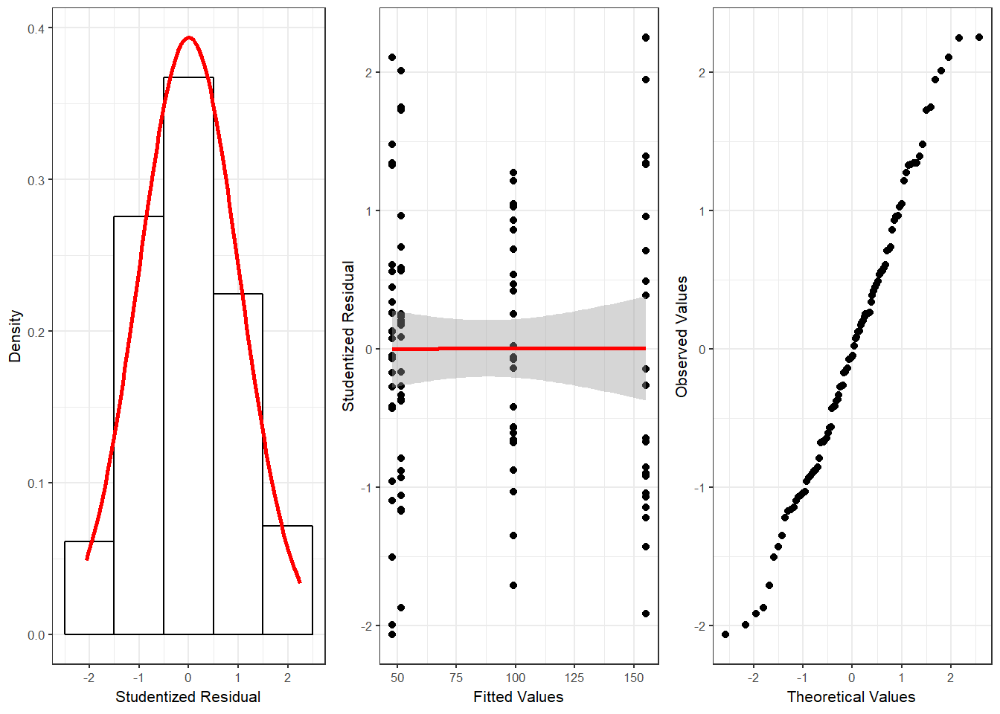
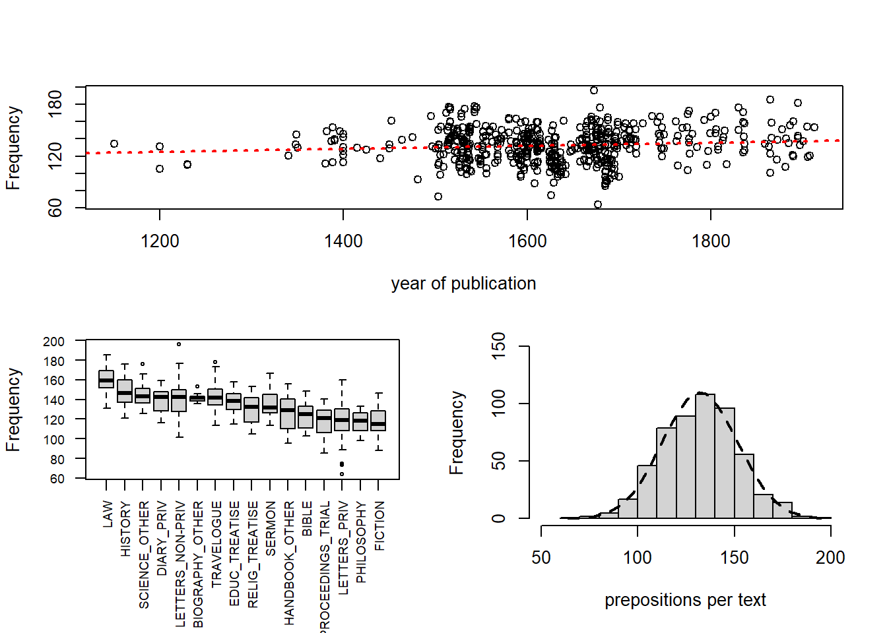
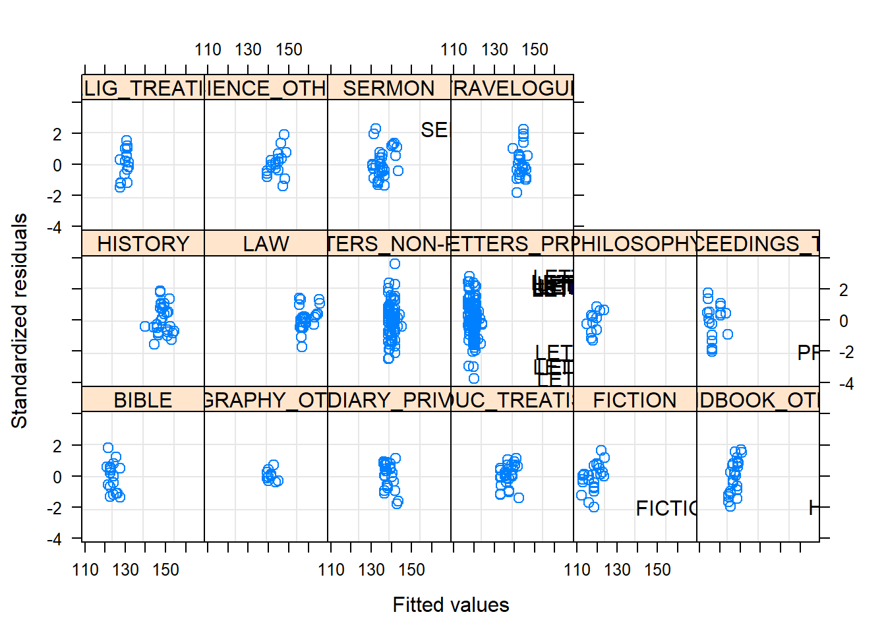
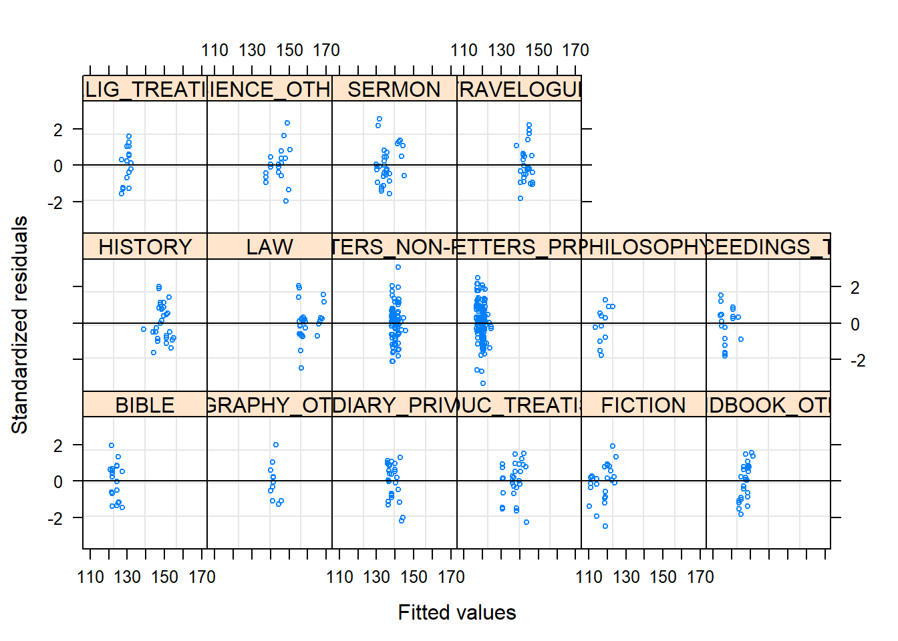
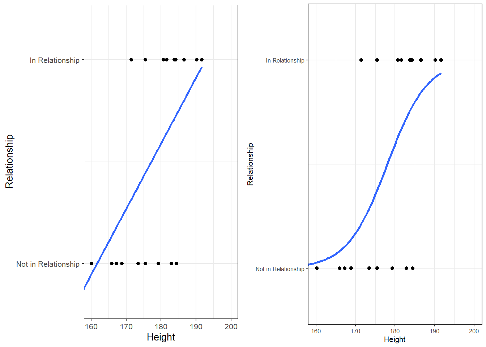
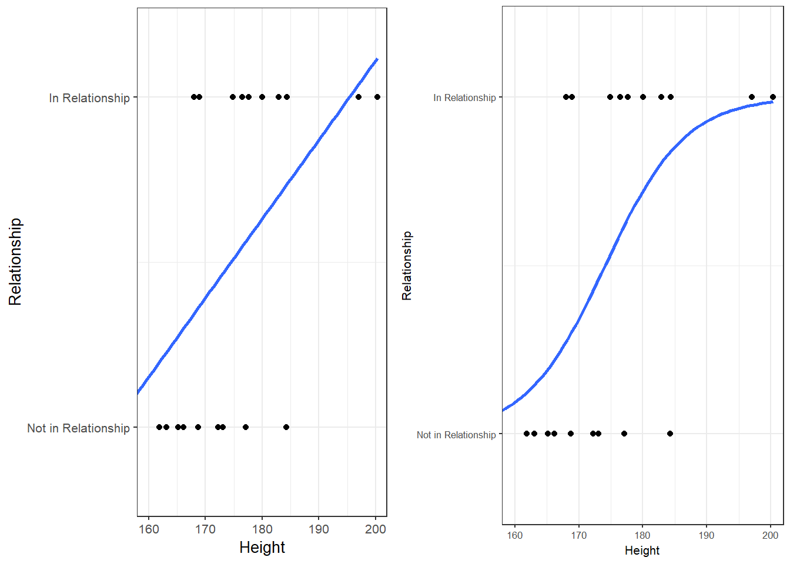
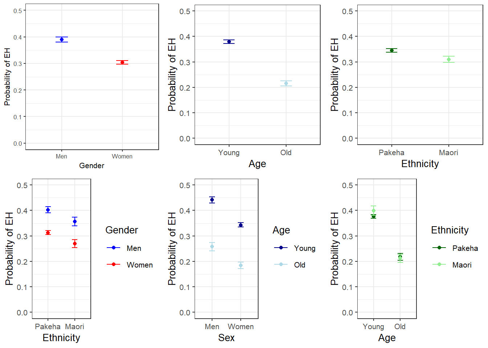
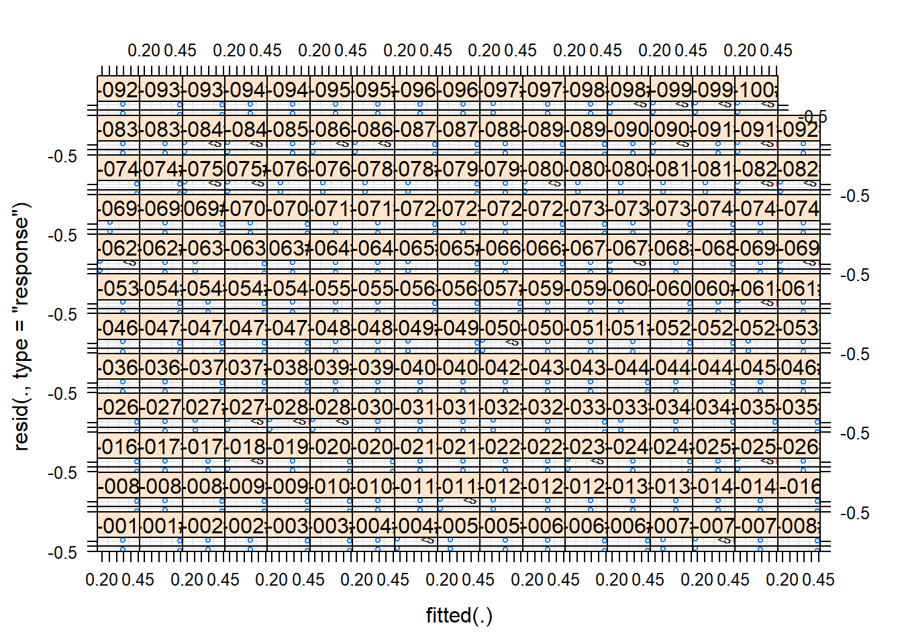
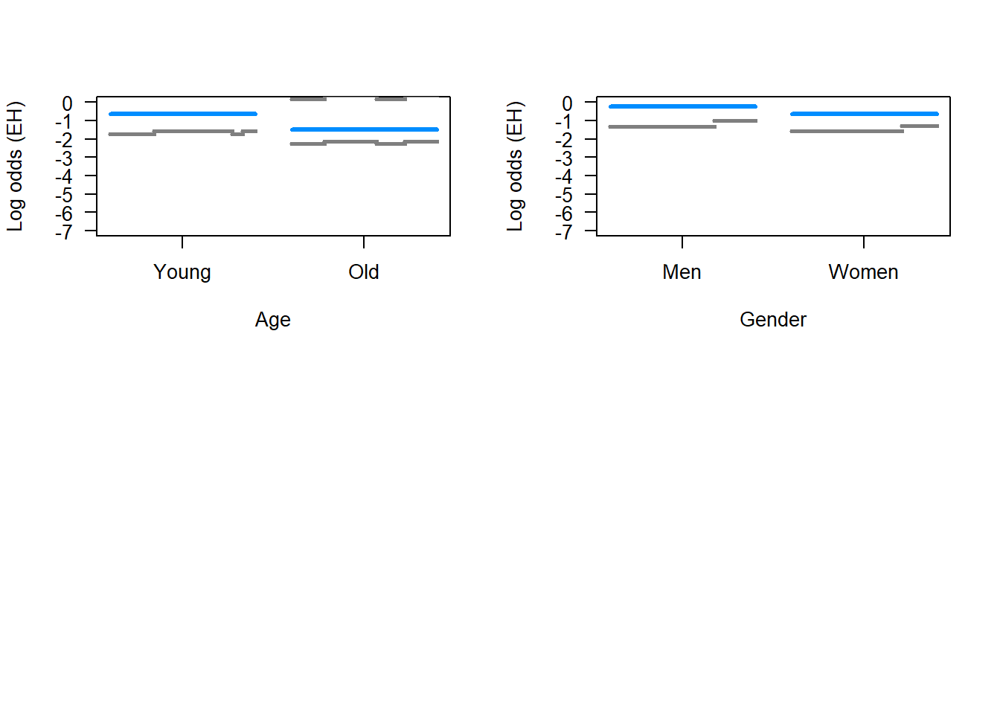
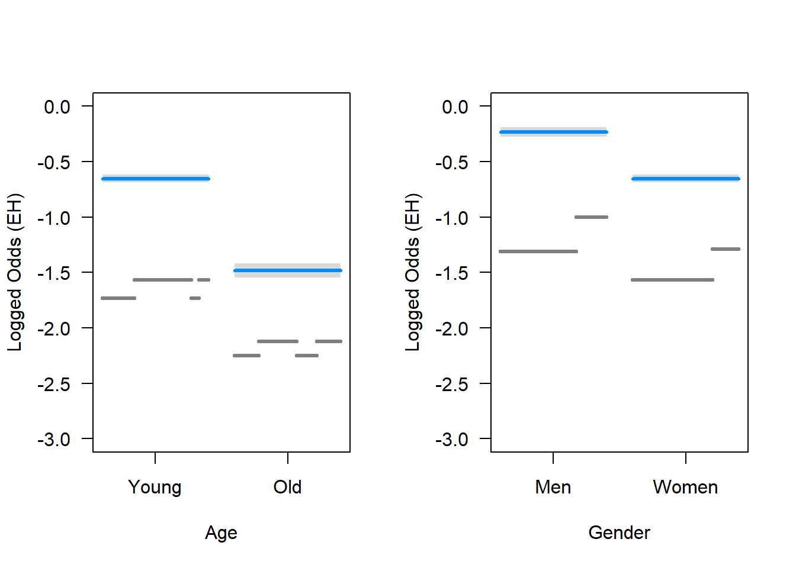

Advanced Inferential Statistics
UQ SLC Digital Team
2019-01-25

1 Multiple Linear Regression
In contrast to simple linear regression, which estimates the effect of a single predictor, multiple linear regression estimates the effect of various predictor (cf. equation ()). A multiple linear regression can thus test the effects of various predictors simultaneously.
\[\begin{equation} f_{(x)} = \alpha + \beta_{1}x_{i} + \beta_{2}x_{i+1} + \dots + \beta_{n}x_{i+n} + \epsilon \end{equation}\]There exists a wealth of literature focusing on multiple linear regressions and the concepts it is based on. For instance, there are (Achen 1982), (Bortz 2006), (Crawley 2005), (Faraway 2002), (A. Field, Miles, and Field 2012) (my personal favourite), and (Wilcox 2009) to name just a few. Introductions to regression modelling in R are (Baayen 2008), (Crawley 2012), or (Gries 2009).
The model diagnostics we are dealing with here are partly identical to the diagnostic methods discussed in the section on simple linear regression. Because of this overlap, diagnostics will only be described in more detail if they have not been described in the section on simple linear regression.
A brief note on minimum necessary sample or data set size appears necessary here. Although there appears to be a general assumption that 25 data points per group are sufficient, this is not necessarily correct (it is merely a general rule of thumb that is actually often incorrect). Such rules of thumb are inadequate because the required sample size depends on the number of variables in a given model, the size of the effect and the variance of the effect. If a model contains many variables, then this requires a larger sample size than a model which only uses very few predictors. Also, to detect an effect with a very minor effect size, one needs a substantially larger sample compared to cases where the effect is very strong. In fact, when dealing with small effects, model require a minimum of 600 cases to reliably detect these effects. Finally, effects that very robust and do not vary much require a much smaller sample size compared with effects that are spurious and vary substantially. Since the sample size depends on the effect size and variance as well as the number of variables, there is no final one-size-fits-all answer to what the best sample size is.
Another, slightly better but still incorrect, rule of thumb is that the more data, the better. This is not correct because models based on too many cases are prone for overfitting and thus report correlations as being significant that are not. However, given that there are procedures that can correct for overfitting, larger data sets are still preferable to data sets that are simply too small to warrant reliable results. In conclusion, it remains true that the sample size depends on the effect under investigation.
Despite there being no ultimate rule of thumb, A. Field, Miles, and Field (2012) 273-275), based on (Green 1991), provide data-driven suggestions for the minimal size of data required for regression models that aim to find medium sized effects (k = number of predictors; categorical variables with more than two levels should be transformed into dummy variables):
- If one is merely interested in the overall model fit (something I have not encountered), then the sample size should be at least 50 + k (k = number of predictors in model).
- If one is only interested in the effect of specific variables, then the sample size should be at least 104 + k (k = number of predictors in model).
- If one is only interested in both model fit and the effect of specific variables, then the sample size should be at least the higher value of 50 + k or 104 + k (k = number of predictors in model).
You will see in the R-code below that there is already a function that test whether or not the sample size is sufficient. (include figure on (A. Field, Miles, and Field 2012, 275)).
1.1 Example: Gifts and Availability
The example we will go through here is taken from A. Field, Miles, and Field (2012). In this example, the research question is if the money that men spend on presents for women depends on the women’s attractiveness and their relationship status. To answer this research question, we will implement a multiple linear regression and start by preparing the R-session (cleaning the workspace, setting options necessary, installing and activating necessary packages, and loading functions).
rm(list=ls(all=T)) # clean workspace
options("scipen" = 100, "digits" = 4) # set options (supress math annotation)
#install.packages("ggplot2") # install ggplot2 package (remove # to activate)
#install.packages("ggplot2") # install car package (remove # to activate)
#install.packages("QuantPsyc") # install QuantPsyc package (remove # to activate)
#install.packages("boot") # install boot package (remove # to activate)
library(ggplot2) # activate ggplot2 package
library(car) # activate car package
library(QuantPsyc) # activate QuantPsyc package
library(boot) # activate boot package
source("rscripts/multiplot_ggplot2.r") # load function multiplot_ggplot2
source("rscripts/mlinr.summary.r") # load function mlinr.summary
source("rscripts/SampleSizeMLR.r") # load function SampleSizeMLR
source("rscripts/ExpR.r") # load function ExpRAfter preparing the session, we can now load the data and inspect its structure and properties.
mlrdata <- read.delim("data/mlrdata.txt", header = TRUE) # load data
head(mlrdata) # inspect first 6 lines## status attraction money
## 1 Relationship NotInterested 86.33
## 2 Relationship NotInterested 45.58
## 3 Relationship NotInterested 68.43
## 4 Relationship NotInterested 52.93
## 5 Relationship NotInterested 61.86
## 6 Relationship NotInterested 48.47str(mlrdata) # inspect structure## 'data.frame': 100 obs. of 3 variables:
## $ status : Factor w/ 2 levels "Relationship",..: 1 1 1 1 1 1 1 1 1 1 ...
## $ attraction: Factor w/ 2 levels "Interested","NotInterested": 2 2 2 2 2 2 2 2 2 2 ...
## $ money : num 86.3 45.6 68.4 52.9 61.9 ...summary(mlrdata) # summarize data## status attraction money
## Relationship:50 Interested :50 Min. : 0.93
## Single :50 NotInterested:50 1st Qu.: 49.84
## Median : 81.73
## Mean : 88.38
## 3rd Qu.:121.57
## Max. :200.99The data set consist of three variables stored in three columns. The first column contains the relationship status of the women, the second whether the man is interested in the woman, and the third column represents the money spend on the present. The data set represents 100 cases and the mean amount of money spend on a present is 88.38 dollars. In a next step, we visualize the data to get a more detailed impression of the relationships between variables.
# plot 1
p1 <- ggplot(mlrdata, # create plot based on mlrdata
aes(status, money)) + # define x- and y-axes
geom_boxplot(fill=c("gold", "indianred4")) + # define colors
theme_set(theme_bw(base_size = 8))+ # define theme (black and white theme)
labs(x = "") + # x-axis label
labs(y = "Money spent on present (AUD)", cex = .75) + # y-axis label
coord_cartesian(ylim = c(0, 250)) + # y-axis range
guides(fill = FALSE) + # supress legend
ggtitle("Status") # define title
# plot 2
p2 <- ggplot(mlrdata, # create plot based on mlrdata
aes(attraction, money)) + # define x- and y-axes
geom_boxplot(fill=c("grey30", "grey70")) + # define colors
theme_set(theme_bw(base_size = 8))+ # define theme (black and white theme)
labs(x = "") + # x-axis label
labs(y = "Money spent on present (AUD)") + # y-axis label
coord_cartesian(ylim = c(0, 250)) + # y-axis range
guides(fill = FALSE) + # supress legend
ggtitle("Attraction") # define title
# plot 3
p3 <- ggplot(mlrdata, # create plot based on mlrdata
aes(x = money)) + # define y-axis
geom_histogram(aes(y=..density..), # add density statistic
binwidth = 10, # define bin width
colour = "black", # define bar edge colour
fill = "white") + # define bar colour
theme_bw() + # black-white theme
geom_density(alpha=.2, fill = "#FF6666") # define colour of transparent overlay
# plot 4
p4 <- ggplot(mlrdata, aes(status, money)) + # create plot based on mlrdata
geom_boxplot(notch = F, aes(fill = factor(status))) + # cerate boxplot
scale_fill_brewer(palette="Set1") + # define colour palette
facet_wrap(~ attraction, nrow = 1) + # cerate separate panels for attraction
theme_set(theme_bw(base_size = 8)) + # define theme (black and white theme)
labs(x = "") + # define x-axis label
labs(y = "Money spent on present (Euro)") + # define y-axis label
coord_cartesian(ylim = c(0, 250)) + # define y-axis range
guides(fill = FALSE) # supress legend
multiplot(p1, p3, p2, p4, cols = 2)
The upper left figure consists of a boxplot which shows how much money was spent based on the relationship status of the moan. The figure suggests that men spend more on women who are not in a relationship. The next figure shows the relationship between the money spend on presents and whether or not the men were interested in the women.
The boxplot in the upper right panel suggests that men spend substantially more on women if the men are interested in them. The next figure depicts the distribution of the amounts of money spend on women. In addition, the figure indicates the existence of two outliers (dots in the boxplot)
The historgram in the lower left panel shows that, although the mean amount of money spent on presents is 88.38 dollars, the distribution peaks around 50 dollars indicating that on average, men spend about 50 dollars on presents. Finally, we will plot the amount of money spend on presents against relationship status by attraction in order to check whether the money spent on presents is affected by an interaction between attraction and relationship status.
The boxplot in the lower right panel confirms the existence of an interaction (a non-additive term) as men only spend more money on single women if the men are interested in the women. If men are not interested in the women, then the relationship has no effect as they spend an equal amount of money on the women regardless of whether they are in a relationship or not.
We will now start to implement the regression model. In a first step, we initialize four base-line models: two minimal base-line models that only use the intercept as their sole predictor and two saturated base-line models that contain all possible predictors. The model pairs are generated with the lm and the glm function as these functions offer different model parameters in their output.
m0.mlr = lm( # generate regression object using the lm function
money ~ 1, # define rgression formula (1 = intercept)
data = mlrdata) # define data set
m0.glm = glm( # generate regression object using the glm function
money ~ 1, # define rgression formula (1 = intercept)
family = gaussian, # define linkage function
data = mlrdata) # define data set
m1.mlr = lm( # generate regression object using the lm function
money ~ (status + attraction)^2, # define rgression formula
data = mlrdata) # define data set
m1.glm = glm( # generate regression object using the glm function
money ~ status * attraction, # define rgression formula
family = gaussian, # define linkage function
data = mlrdata) # define data setAfter generating the saturated base-line models we can now start with the model fitting. Model fitting refers to a process that aims at find the model that explains a maximum of variance with a minimum of predictors (cf. A. Field, Miles, and Field 2012, 318). Model fitting is therefore based on the principle of parsimony which is related to Occam’s razor according to which explanations that require fewer assumptions are more likely to be true.
1.2 Automatic Model Fitting
In this section, we will use a step-wise step-down procedure that uses decreases in AIC (Akaike information criterion) as the criterion to minimize the model in a step-wise manner. This procedure aims at finding the model with the lowest AIC values by evaluating - step-by-step - whether the removal of a predictor (term) leads to a lower AIC value.
The AIC is calculated using the equation below. The lower the AIC value, the better the balance between explained variance and the number of predictors. AIC values can and should only be compared for models that are fit on the same dataset with the same (number of) cases (\(LL\) stands for LogLikelihood and \(k\) represents the number of predictors in the model).
\[\begin{equation} -2LL + 2k \label{eq:aic} \end{equation}\]Interactions are evaluated first and only if all interactions have been removed would the procedure start removing main effects. Other model fitting procedures (forced entry, step-wise step up, hierarchical) are discussed during the implementation of other regression models. We cannot discuss all procedures here as model fitting is rather complex and a discussion of even the most common procedures would to lengthy and time consuming at this point. It is important to note though that there is not perfect model fitting procedure and automated approaches should be handled with care as they are likely to ignore violations of model parameters that can be detected during manual - but time consuming - model fitting procedures. As a general rule of thumb, it is advisable to fit models as carefully and deliberately as possible. We will now begin to fit the model.
step(m1.mlr, direction = "both") # automated AIC based model fitting## Start: AIC=592.5
## money ~ (status + attraction)^2
##
## Df Sum of Sq RSS AIC
## <none> 34558 593
## - status:attraction 1 24947 59505 645##
## Call:
## lm(formula = money ~ (status + attraction)^2, data = mlrdata)
##
## Coefficients:
## (Intercept)
## 99.2
## statusSingle
## 57.7
## attractionNotInterested
## -47.7
## statusSingle:attractionNotInterested
## -63.2The automated model fitting procedure informs us that removing predictors ahs not caused a decrease in the AIC. The saturated model is thus also the final minimal adequate model. We will now inspect the final minimal model and go over the model report.
m2.mlr = lm( # generate regression object using the lm function
money ~ (status + attraction)^2, # define regression formula
data = mlrdata) # define data set
m2.glm = glm( # generate regression object using the glm function
money ~ (status + attraction)^2, # define regression formula
family = gaussian, # define linkage function
data = mlrdata) # define data set
summary(m2.mlr) # inspect final minimal model##
## Call:
## lm(formula = money ~ (status + attraction)^2, data = mlrdata)
##
## Residuals:
## Min 1Q Median 3Q Max
## -45.08 -14.26 0.46 11.93 44.14
##
## Coefficients:
## Estimate Std. Error t value
## (Intercept) 99.15 3.79 26.13
## statusSingle 57.69 5.37 10.75
## attractionNotInterested -47.66 5.37 -8.88
## statusSingle:attractionNotInterested -63.18 7.59 -8.32
## Pr(>|t|)
## (Intercept) < 0.0000000000000002 ***
## statusSingle < 0.0000000000000002 ***
## attractionNotInterested 0.000000000000038 ***
## statusSingle:attractionNotInterested 0.000000000000581 ***
## ---
## Signif. codes: 0 '***' 0.001 '**' 0.01 '*' 0.05 '.' 0.1 ' ' 1
##
## Residual standard error: 19 on 96 degrees of freedom
## Multiple R-squared: 0.852, Adjusted R-squared: 0.847
## F-statistic: 184 on 3 and 96 DF, p-value: <0.0000000000000002The first element of the report is called Call and it reports the regression formula of the model. Then, the report provides the residual distribution (the range, median and quartiles of the residuals) which allows drawing inferences about the distribution of differences between observed and expected values. If the residuals are distributed unevenly, then this is a strong indicator that the model is unstable and unreliable because mathematical assumptions on which the model is based are violated.
Next, the model summary reports the most important part: a table with model statistics of the fixed-effects structure of the model. The table contains the estimates (coefficients of the predictors), standard errors, t-values, and the p-values which show whether a predictor significantly correlates with the dependent variable that the model investigates.
All main effects (status and attraction) as well as the interaction between status and attraction is reported as being significantly correlated with the dependent variable (money). An interaction occurs if a correlation between the dependent variable and a predictor is affect by another predictor.
The top most term is called intercept and has a value of 99.15 which represents the base estimate to which all other estimates refer. To exemplify what this means, let us consider what the model would predict a man would spend on a present for a women who is single but the man is not attracted to her: The amount he would spend (based on the model would be 99.15 dollars (the intercept) plus 57.69 dollars (because she is single) minus 47.66 dollars (because he is not interested in her) minus 63.18 dollars because of the interaction between status and attraction.
#intercept Single NotInterested Single:NotInterested
99.15 + 57.69 + 0 + 0 # 156.8 single + interested ## [1] 156.899.15 + 57.69 - 47.66 - 63.18 # 46.00 single + not interested## [1] 4699.15 - 0 + 0 - 0 # 99.15 relationship + interested## [1] 99.1599.15 - 0 - 47.66 - 0 # 51.49 relationship + not interested## [1] 51.49Interestingly, the model predicts that a man would invest even less money in a women that he is not interested in if she were single compared to being in a relationship! We can derive the same results easier using the predict function.
prediction <- predict(m2.mlr, # make prediction based on the model
newdata = mlrdata) # for original data
table(round(prediction,2)) # inspect predictions##
## 46.01 51.49 99.15 156.85
## 25 25 25 25Below the table of coefficient, the summary reports model statistics that provide information about how well the model performs. The difference between the values and the values in the coefficients table is that the model statistics refer to the model as a whole rather than focusing on individual predictors.
The multiple R2-value is a measure of how much variance the model explains. A multiple R2-value of 0 would inform us that the model does not explain any variance while a value of .852 mean that the model explains 85.2 percent of the variance. A value of 1 would inform us that the model explains 100 percent of the variance and that the predictions of the model match the observed values perfectly. Multiplying the multiple R2-value thus provides the percentage of explained variance. Models that have a multiple R2-value equal or higher than .05 are deemed substantially significant (cf Szmrecsanyi 2006, 55). It has been claimed that models should explain a minimum of 5 percent of variance but this is problematic as itis not uncommon for models to have very low explanatory power while still performing significantly and systematically better than chance. In addition, the total amount of variance is negligible in cases where one is interested in very weak but significant effects. It is much more important for model to perform significantly better than minimal base-line models because if this is not the case, then the model does not have any predictive and therefore no explanatory power.
The adjusted R2-value considers the amount of explained variance in light of the number of predictors in the model (it is thus somewhat similar to the AIC and BIC) and informs about how well the model would perform if it were applied to the population that the sample is drawn from. Ideally, the difference between multiple and adjusted R2-value should be very small as this means that the model is not overfitted. If, however, the difference between multiple and adjusted R2-value is substantial, then this would strongly suggest that the model is instable and overfitted to the data while being inadequate for drawing inferences about the population. Differences between multiple and adjusted R2-values indicate that the data contains outliers that cause the distribution of the data on which the model is based to differ from the distributions that the model mathematically requires to provide reliable estimates. The difference between multiple and adjusted R2-value in our model is very small (85.2-84.7=.05) and should not cause concern.
Before continuing, we will calculate the confidence intervals of the coefficients.
confint(m2.mlr) # extract confidence intervals of the coefficients## 2.5 % 97.5 %
## (Intercept) 91.62 106.69
## statusSingle 47.04 68.34
## attractionNotInterested -58.31 -37.01
## statusSingle:attractionNotInterested -78.24 -48.11anova(m0.mlr, m2.mlr) # compare baseline- and minimal adequate model## Analysis of Variance Table
##
## Model 1: money ~ 1
## Model 2: money ~ (status + attraction)^2
## Res.Df RSS Df Sum of Sq F Pr(>F)
## 1 99 233562
## 2 96 34558 3 199005 184 <0.0000000000000002 ***
## ---
## Signif. codes: 0 '***' 0.001 '**' 0.01 '*' 0.05 '.' 0.1 ' ' 1Now, we compare the final minimal adequate model to the base-line model to test whether then final model significantly outperforms the baseline model.
Anova(m0.mlr, m2.mlr, type = "III") # compare baseline- and minimal adequate model## Anova Table (Type III tests)
##
## Response: money
## Sum Sq Df F value Pr(>F)
## (Intercept) 781016 1 331 <0.0000000000000002 ***
## Residuals 34558 96
## ---
## Signif. codes: 0 '***' 0.001 '**' 0.01 '*' 0.05 '.' 0.1 ' ' 1The comparison between the two model confirms that the minimal adequate model performs significantly better (makes significantly more accurate estimates of the outcome variable) compared with the baseline model.
1.3 Outlier Detection
After implementing the multiple regression, we now need to look for outliers and perform the model diagnostics by testing whether removing data points disproportionately decreases model fit. To begin with, we generate diagnostic plots.
# start plotting
par(mfrow = c(1, 4)) # display plots in 3 rows and 2 columns
plot(m2.mlr) # plot fitted values
par(mfrow = c(1, 1)) # restore original 1 plot per row and column settings# determine a cutoff for data points that have D-values higher than 4/(n-k-1)
cutoff <- 4/((nrow(mlrdata)-length(m2.mlr$coefficients)-2))
# start plotting
par(mfrow = c(1, 2)) # display plots in 3 rows and 2 columns
qqPlot(m2.mlr, main="QQ Plot") # cerate qq-plot## [1] 52 83plot(m2.mlr, which=4, cook.levels = cutoff) # plot cook*s distance
par(mfrow = c(1, 1)) # restore original 1 plot per row and column settingsThe graphs indicate that data points 52, 64, and 83 may be problematic. We will therefore statistically evaluate whether these data points need to be removed. In order to find out which data points require removal, we extract the influence measure statistics and add them to out data set.
infl <- influence.measures(m2.mlr) # extract influence statistics
mlrdata <- data.frame(mlrdata, infl[[1]], infl[[2]]) # add infl. statistics to data
# annotate too influential data points
remove <- apply(infl$is.inf, 1, function(x) {
ifelse(x == TRUE, return("remove"), return("keep")) } )
mlrdata <- data.frame(mlrdata, remove) # add annotation to data
nrow(mlrdata) # number of rows before removing outliers## [1] 100mlrdata <- mlrdata[mlrdata$remove == "keep", ] # remove outliers
nrow(mlrdata) # number of rows after removing outliers## [1] 98The difference in row in the data set before and after removing data points indicate that two data points which represented outliers have been removed.
1.4 Rerun Regression
As we have a different data set now, we need to rerun the regression analysis. As the steps are identical to the regression analysis performed above, the steps will not be described in greater detail.
m0.mlr = lm( # generate regression object using the lm function
money ~ 1, # define regression formula (1 = intercept)
data = mlrdata) # define data set
m0.glm = glm( # generate regression object using the glm function
money ~ 1, # define regression formula (1 = intercept)
family = gaussian, # define linkage function
data = mlrdata) # define data set
m1.mlr = lm( # generate regression object using the lm function
money ~ (status + attraction)^2, # define regression formula
data = mlrdata) # define data set
m1.glm = glm( # generate regression object using the glm function
money ~ status * attraction, # define regression formula
family = gaussian, # define linkage function
data = mlrdata) # define data set
step(m1.mlr, direction = "both") # automated AIC based model fitting## Start: AIC=570.3
## money ~ (status + attraction)^2
##
## Df Sum of Sq RSS AIC
## <none> 30411 570
## - status:attraction 1 21647 52058 621##
## Call:
## lm(formula = money ~ (status + attraction)^2, data = mlrdata)
##
## Coefficients:
## (Intercept)
## 99.2
## statusSingle
## 55.9
## attractionNotInterested
## -47.7
## statusSingle:attractionNotInterested
## -59.5m2.mlr = lm( # generate regression object using the lm function
money ~ (status + attraction)^2, # define regression formula
data = mlrdata) # define data set
m2.glm = glm( # generate regression object using the glm function
money ~ status * attraction, # define regression formula
family = gaussian, # define linkage function
data = mlrdata) # define data set
summary(m2.mlr) # inspect final minimal model##
## Call:
## lm(formula = money ~ (status + attraction)^2, data = mlrdata)
##
## Residuals:
## Min 1Q Median 3Q Max
## -35.76 -13.51 -0.99 10.60 38.77
##
## Coefficients:
## Estimate Std. Error t value
## (Intercept) 99.15 3.60 27.56
## statusSingle 55.85 5.14 10.87
## attractionNotInterested -47.66 5.09 -9.37
## statusSingle:attractionNotInterested -59.46 7.27 -8.18
## Pr(>|t|)
## (Intercept) < 0.0000000000000002 ***
## statusSingle < 0.0000000000000002 ***
## attractionNotInterested 0.000000000000004 ***
## statusSingle:attractionNotInterested 0.000000000001338 ***
## ---
## Signif. codes: 0 '***' 0.001 '**' 0.01 '*' 0.05 '.' 0.1 ' ' 1
##
## Residual standard error: 18 on 94 degrees of freedom
## Multiple R-squared: 0.857, Adjusted R-squared: 0.853
## F-statistic: 188 on 3 and 94 DF, p-value: <0.0000000000000002confint(m2.mlr) # extract confidence intervals of the coefficients## 2.5 % 97.5 %
## (Intercept) 92.01 106.30
## statusSingle 45.65 66.06
## attractionNotInterested -57.76 -37.56
## statusSingle:attractionNotInterested -73.89 -45.03anova(m0.mlr, m2.mlr) # compare baseline with final model## Analysis of Variance Table
##
## Model 1: money ~ 1
## Model 2: money ~ (status + attraction)^2
## Res.Df RSS Df Sum of Sq F Pr(>F)
## 1 97 213227
## 2 94 30411 3 182816 188 <0.0000000000000002 ***
## ---
## Signif. codes: 0 '***' 0.001 '**' 0.01 '*' 0.05 '.' 0.1 ' ' 1Anova(m0.mlr, m2.mlr, type = "III") # compare baseline with final model## Anova Table (Type III tests)
##
## Response: money
## Sum Sq Df F value Pr(>F)
## (Intercept) 760953 1 346 <0.0000000000000002 ***
## Residuals 30411 94
## ---
## Signif. codes: 0 '***' 0.001 '**' 0.01 '*' 0.05 '.' 0.1 ' ' 11.5 Additional Model Diagnostics
After rerunning the regression analysis on the updated data set, we again cerate diagnostic plots in order to check whether there are potentially problematic data points.
# start plotting
par(mfrow = c(2, 2)) # display plots in 2 rows and 2 columns
plot(m2.mlr) # plot fitted values
par(mfrow = c(1, 1)) # restore original 1 plot per row and column settings# determine a cutoff for data points that have D-values higher than 4/(n-k-1)
cutoff <- 4/((nrow(mlrdata)-length(m2.mlr$coefficients)-2))
# start plotting
par(mfrow = c(1, 2)) # display plots in 1 row and 2 columns
qqPlot(m2.mlr, main="QQ Plot") # cerate qq-plot## 84 88
## 82 86plot(m2.mlr, which=4, cook.levels = cutoff) # plot cook*s distancepar(mfrow = c(1, 1)) # restore original 1 plot per row and column settingsAlthough the diagnostic plots indicate that additional points may be problematic, but these data points deviate substantially less from the trend than was the case with the data points that have already been removed. To make sure that retaining the data points that are deemed potentially problematic by the diagnostic plots, is acceptable, we extract diagnostic statistics and add them to the data.
# addieren von modelldiagnostiken zum datasatz
mlrdata$residuals <- resid(m2.mlr)
mlrdata$standardized.residuals <- rstandard(m2.mlr)
mlrdata$studentized.residuals <- rstudent(m2.mlr)
mlrdata$cooks.distance <- cooks.distance(m2.mlr)
mlrdata$dffit <- dffits(m2.mlr)
mlrdata$leverage <- hatvalues(m2.mlr)
mlrdata$covariance.ratios <- covratio(m2.mlr)
mlrdata$fitted <- m2.mlr$fitted.valuesWe can now use these diagnostic statistics to create more precise diagnostic plots.
# plot 5
p5 <- ggplot(mlrdata,
aes(studentized.residuals)) +
theme(legend.position = "none") +
theme_set(theme_bw(base_size = 8))+ # define theme (black and white theme)
geom_histogram(aes(y=..density..),
binwidth = 1,
colour="black",
fill="white") +
labs(x = "Studentized Residual", y = "Density") +
stat_function(fun = dnorm,
args = list(mean = mean(mlrdata$studentized.residuals, na.rm = TRUE),
sd = sd(mlrdata$studentized.residuals, na.rm = TRUE)),
colour = "red", size = 1)
# plot 6
p6 <- ggplot(mlrdata, aes(fitted, studentized.residuals)) +
geom_point() +
geom_smooth(method = "lm", colour = "Red")+
theme_set(theme_bw(base_size = 8))+ # define theme (black and white theme)
labs(x = "Fitted Values",
y = "Studentized Residual")
# plot 7
p7 <- qplot(sample = mlrdata$studentized.residuals, stat="qq") +
theme_set(theme_bw(base_size = 8))+ # define theme (black and white theme)
labs(x = "Theoretical Values",
y = "Observed Values")
multiplot(p5, p6, p7, cols = 3)
The new diagnostic plots do not indicate outliers that require removal. With respect to such data points the following parameters should be considered:
Data points with standardised residuals > 3.29 should be removed (A. Field, Miles, and Field 2012, 269)
If more than 1 percent of data points have standardized residuals exceeding values > 2.58, then the error rate of the model is inacceptable (A. Field, Miles, and Field 2012, 269).
If more than 5 percent of data points have standardized residuals exceeding values > 1.96, then the error rate of the model is inacceptable (A. Field, Miles, and Field 2012, 269)
In addition, data points with Cook’s D-values > 1 should be removed (A. Field, Miles, and Field 2012, 269)
Also, data points with leverage values \(3(k + 1)/n\) (k = Number of predictors, N = Number of cases in model) should be removed (A. Field, Miles, and Field 2012, 270)
There should not be (any) autocorrelation among predictors. This means that independent variables cannot be correlated with itself (for instance, because data points come from the same subject). If there is autocorrelation among predictors, then a Repeated Measures Design or a (hierarchical) mixed-effects model should be implemented instead.
Predictors cannot substantially correlate with each other (multicollinearity). If a model contains predictors that have variance inflation factors (VIF) > 10 the model is completely unreliable (Myers 1990) and predictors causing such VIFs should be removed. Indeed, even VIFs of 2.5 can be problematic (Szmrecsanyi 2006, 215) and (Zuur, Ieno, and Elphick 2010) proposes that variables with VIFs exceeding 3 should be removed!
Data points with 1/VIF values \(<\) .1 must be removed (data points with values above .2 are considered problematic) (Menard 1995).
The mean value of VIFs should be \(<\) 1 (Bowerman and O’Connell 1990).
# 1: optimal = 0
# (aufgelistete datenpunkte sollten entfernt werden)
which(mlrdata$standardized.residuals > 3.29)## integer(0)# 2: optimal = 1
# (listed data points should be removed)
stdres_258 <- as.vector(sapply(mlrdata$standardized.residuals, function(x) {
ifelse(sqrt((x^2)) > 2.58, 1, 0) } ))
(sum(stdres_258) / length(stdres_258)) * 100## [1] 0# 3: optimal = 5
# (listed data points should be removed)
stdres_196 <- as.vector(sapply(mlrdata$standardized.residuals, function(x) {
ifelse(sqrt((x^2)) > 1.96, 1, 0) } ))
(sum(stdres_196) / length(stdres_196)) * 100## [1] 6.122# 4: optimal = 0
# (listed data points should be removed)
which(mlrdata$cooks.distance > 1)## integer(0)# 5: optimal = 0
# (data points should be removed if cooks distance is close to 1)
which(mlrdata$leverage >= (3*mean(mlrdata$leverage)))## integer(0)# 6: checking autocorrelation:
# Durbin-Watson test (optimal: grosser p-wert)
dwt(m2.mlr)## lag Autocorrelation D-W Statistic p-value
## 1 -0.01433 1.968 0.644
## Alternative hypothesis: rho != 0# 7: test multicolliniarity 1
vif(m2.mlr)## status attraction status:attraction
## 2.00 1.96 2.96# 8: test multicolliniarity 2
1/vif(m2.mlr)## status attraction status:attraction
## 0.5000 0.5102 0.3378# 9: mean vif should not exceed 1
mean(vif(m2.mlr))## [1] 2.307Except for the mean VIF value (2.307) which should not exceed 1, all diagnostics are acceptable. We will now test whether the sample size is sufficient for our model. With respect to the minimal sample size and based on (Green 1991), (A. Field, Miles, and Field 2012, 273–74) offer the following rules of thumb (k = number of predictors; categorical predictors with more than two levels should be recoded as dummy variables):
1.6 Evaluation of Sample Size
After performing the diagnostics, we will now test whether the sample size is adequate and what the values of R would be based on a random distribution in order to be able to estimate how likely a \(\beta\)-error is given the present sample size (cf. A. Field, Miles, and Field 2012, 274). Beta errors (or \(\beta\)-errors) refer to the erroneous assumption that a predictor is not significant (based on the analysis and given the sample) although it does have an effect in the population. In other words, \(\beta\)-error means to overlook a significant effect because of weaknesses of the analysis. The test statistics ranges between 0 and 1 where lower values are better. If the values approximate 1, then there is serious concern as the model is not reliable given the sample size. In such cases, unfortunately, the best option is to increase the sample size.
smplesz(m2.mlr) # check if sample size is sufficient## [1] "Sample too small: please increase your sample by 9 data points"expR(m2.mlr) # check for beta-error likelihood ## [1] "Based on the sample size expect a false positive correlation of 0.0309 between the predictors and the predicted"The function smplesz reports that the sample size is insufficient by 9 data points according to (Green 1991). The likelihood of \(\beta\)-errors, however, is very small (0.0309). As a last step, we summarize the results of the regression analysis.
mlr.summary(m2.mlr, m2.glm, ia = T) # tabulate regression results## Estimate VIF CI(2.5%) CI(97.5%)
## (Intercept) 99.15 92.1 106.21
## statusSingle 55.85 2 45.78 65.93
## attractionNotInterested -47.66 1.96 -57.63 -37.69
## statusSingle:attractionNotInterested -59.46 2.96 -73.71 -45.21
## Model statistics
## Number of cases in model
## Residual Standard Error on 94 DF
## Multiple R2
## Adjusted R2
## AIC
## BIC
## F-statistic
## Std. Error t value
## (Intercept) 3.6 27.56
## statusSingle 5.14 10.87
## attractionNotInterested 5.09 -9.37
## statusSingle:attractionNotInterested 7.27 -8.18
## Model statistics
## Number of cases in model
## Residual Standard Error on 94 DF
## Multiple R2
## Adjusted R2
## AIC
## BIC
## F-statistic F-statistic: 188.36 DF: 3 and 94
## Pr(>|t|) Significance
## (Intercept) 0 p < .001***
## statusSingle 0 p < .001***
## attractionNotInterested 0 p < .001***
## statusSingle:attractionNotInterested 0 p < .001***
## Model statistics Value
## Number of cases in model 98
## Residual Standard Error on 94 DF 17.99
## Multiple R2 0.857
## Adjusted R2 0.853
## AIC 850.4
## BIC 863.32
## F-statistic p-value: 0 p < .001***(Falls signifikante Interaktionen vorliegen, sollten die Haupteffekte der Prädikatoren, die an der/n Interaktion/en beteiligt sind, nicht interpretiert werden. Sie werden hier dennoch interpretiert, um zu verdeutlichen, wie die Ergebnisse einer multiplen linearen Regression verschriftlicht werden können.)
The results of the regression analysis can be summarized as follows:
A multiple linear regression was fitted to the data in a step-wise step-down, AIC-based (Akaike’s Information Criterion) procedure to the data and arrived at a final minimal model. During the model diagnostics, two outliers were detected and removed. Further diagnostics did not find other issues after the removal. The final minimal adequate regression model is based on 98 data points and performs highly significantly better than a minimal baseline model (Multiple R2: .857, Adjusted R2: .853, F-statistic (3, 94): 154.4, AIC: 850.4, BIC: 863.32, p<.001\(***\)). The final minimal adequate regression model reports attraction and status as significant main effects. The relationship status of women correlates highly significantly and positively with the amount of money spend on the women’s presents (SE: 5.14, t-value: 10.87, p<.001\(***\)). This shows that men spend 156.8 dollars on presents are single while they spend 99,15 dollars if the women are in a relationship. Whether men are attracted to women also correlates highly significantly and positively with the money they spend on women (SE: 5.09, t-values: -9.37, p<.001\(***\)). If men are not interested in women, they spend 47.66 dollar less on a present for women compared with women the men are interested in.
Furthermore, the final minimal adequate regression model reports a highly significant interaction between relationship status and attraction (SE: 7.27, t-value: -8.18, p<.001\(***\)): If women are single but man are not interested in them, men spend 59.46 dollars less on their presents compared to all other constellations.
1.7 Exercises
- Download the data set called
exdatamlrfromhttp://martinschweinberger.de/docs/data/exdatamlr.txtand apply what you have learned by implementing a multiple linear regression model so that you can answer how movement (move) and food intake (food) affect weight (given the data at hand).
2 Linear Mixed-Effects Regression Models
The following focuses on an extension of ordinary multiple linear regressions: mixed-effects regression linear regression.
2.1 Introduction
So far, the regression models that we have used only had fixed-effects. having only fixed-effecst measn that all data points are treated as if they are completely independent and thus on the same hierarchical level. However, it is very common, that the data is nested in the sense that data points are not independent because they are, for instance produced by the same speaker or are grouped by some other characteristsi. In such cases, the data is consiederd hierarchical and statistical models should incororate such structiral features of the data they work upon. With respect to regression modelling, hierarchical structures are incorporated by what is called random effects. When models only have a fixed-effects structure, then they make use of only a single intercept and/or slope (as in the left panel in the figure below), while mixed effects models have intercepts for each level of a random effect. If the randon effect structure represents speakers then this would mean that a mixed-model would have a separate intercept and or slope for each speaker.

Random Effects have two parameters: the intercept (the point where the regression line cross the y-axis) and the slope (the acclivity of the regression line). In contrast to fixed-effects models have only 1 intercept and one slope (left panel of the Figure above) while mixed-effects models can have various random intercepts (center left panel ) or various random slopes (center right panel ), or both, various random intercepts and various random slopes (right panel ). In the follwoing, we will onyl focus on models with random interecpts becasue this is the by far more common method and because including both random incetrcepts and random slopes requires huge amounts of data. Consider the Figure below to understand what is meant by “random intercepts”.

The left panel merely shows the data while the center panel includes the regression line for a regression that estimates Weight basedon Height. The right panel shows the regression line and, in addition, random incercepts each each of the three groups.
After adding random intercepts, predictors (or fixed effects) are added to the model (just like with multiple rgeression). So mixed-effects are called mixed-effects because they contain both random and fixed effects.
In terms of general procedure, random effects are added first, and only after we have ascertained that including random effects is warranted, we test whether including fixed-effects is warranted (vgl. A. Field, Miles, and Field 2012). We test whteher including random effects is warranted by comparing a model, that bases its estiamtes of the dependend variable solely on the base intercept (the mean), with a model, that bases its estiamtes of the dependend variable solely on the intercepts of the random effect. If the random-effect model explains significantly more variance than the simple model without random effect structure, then we continue with the mixed-effects model. In other words, including random effects is justified if they reduce residual deviance.
2.2 Example: Preposition Use across Time by Genre
To explore how to implement a mixed-effects model in R we revisit the preposition data that contains relative frequencies of prepositions in English texts written between 1150 and 1913. As a first step, and to prepare our analysis, we load neccessary R packages, specify oprions, and load as well as provide an overview of the data.
# activate packages
library(RLRsim)
#library(car)
#library(QuantPsyc)
#library(boot)
library(nlme)
library(lme4)
#library(ez)
library(ggplot2)
# set options
options("scipen" = 100, "digits" = 4) # supress scientific notation
options(stringsAsFactors = F) # do not convert strings into factors
mydata <- read.delim("data/lmemdata.txt", header = TRUE) # read in data
mydata$date <- as.numeric(mydata$date) # convert date into a numeric variable
head(mydata); nrow(mydata) # inspect updated data set## date genre text pptw region
## 1 1736 SCIENCE_OTHER albin 166.0 north
## 2 1711 EDUC_TREATISE anon 139.9 north
## 3 1808 LETTERS_PRIV austen 130.8 north
## 4 1878 EDUC_TREATISE bain 151.3 north
## 5 1743 EDUC_TREATISE barclay 145.7 north
## 6 1908 EDUC_TREATISE benson 120.8 north## [1] 537The data set contains the date when the text was written (date), the genre of the text (genre), the name of the text (text), the relative frequency of prepositions in the text (pptw), and the region in which the text was written (region). We now plot the data to get a first impression of its structure.
# visualize variables (2 plots per row)
# 3 plots in 1 window
def.par <- par(no.readonly = TRUE)
nf <- layout(matrix(c(1, 1, 2, 3), 2, 2, byrow = T))
plot(mydata$pptw ~ mydata$date, ylab = "Frequency", xlab = "year of publication")
abline(lm(mydata$pptw ~ mydata$date), lty = 3, lwd = 2, col = "red")
# re-set margins to fit the labels
par(mar = c(7.2, 4, 1, 2) + 0.1)
# reorder genre by median
genrebymedian <- with(mydata, reorder(genre, -pptw, median))
# generate plots
plot(mydata$pptw ~ genrebymedian,
col = "lightgrey",
ylab = "Frequency",
xlab = "",
las = 2,
cex.axis = .7,
cex = .5)
# re-set margins
par(mar = c(5, 4, 1, 2) + 0.1)
x = mydata$pptw
h = hist(mydata$pptw,
ylim =c(0, 150),
xlim = c(50, 200),
xlab = "prepositions per text",
col = "lightgrey",
main = "")
xfit <- seq(min(mydata$pptw), max(mydata$pptw), length = 40)
yfit <- dnorm(xfit, mean = mean(mydata$pptw),sd = sd(mydata$pptw))
yfit <- yfit*diff(h$mids[1:2])*length(x)
lines(xfit, yfit, lty = 2, lwd=2)
# restore original graphic's parameters
par(def.par)The scatter plot in the upper panel indicates that the use of prepositions has moderattely increased over time while the boxplots in the lower left panel show show that the gernres differ quite substantailly with respect to their median frequencies of preositions per text. Finally, the histogram in the lower right panel show that preposition use is distributed normally with a mean of 132.2 prepositions per text.
# plot 8
p8 <- ggplot(mydata, aes(date, pptw)) +
geom_point() +
labs(x = "Year") +
labs(y = "Prepositions per 1,000 words") +
geom_smooth(method = "lm") +
theme_set(theme_bw(base_size = 10))
# plot 9
p9 <- ggplot(mydata, aes(region, pptw)) +
geom_boxplot() +
labs(x = "Region") +
labs(y = "Prepositions per 1,000 words") +
geom_smooth(method = "lm") # with linear model smoothing!
# include genre (lowess)
multiplot(p8, p9, cols = 2)ggplot(mydata, aes(date, pptw)) +
geom_point() +
facet_wrap(~ genre, nrow = 4) +
geom_smooth(method = "lm") +
theme_bw() +
labs(x = "Year") +
labs(y = "Prepositions per 1,000 words") +
coord_cartesian(ylim = c(0, 220))
Centering or scaling numeric variables is useful for later interpretation of regression models: if the date variable was not centered, the regression would show the effects of variables at year 0(!). If numeric variables are scaled, other variables are variables are considered relative not to 0 but to the mean of that variable (in this case the mean of years in our data). Centering simply means that the mean of the numeric vairbale is subtracted from each value.
## date genre text pptw region
## 1 109.87 SCIENCE_OTHER albin 166.0 north
## 2 84.87 EDUC_TREATISE anon 139.9 north
## 3 181.87 LETTERS_PRIV austen 130.8 north
## 4 251.87 EDUC_TREATISE bain 151.3 north
## 5 116.87 EDUC_TREATISE barclay 145.7 north
## 6 281.87 EDUC_TREATISE benson 120.8 north## 'data.frame': 537 obs. of 5 variables:
## $ date : num [1:537, 1] 109.9 84.9 181.9 251.9 116.9 ...
## ..- attr(*, "scaled:center")= num 1626
## $ genre : chr "SCIENCE_OTHER" "EDUC_TREATISE" "LETTERS_PRIV" "EDUC_TREATISE" ...
## $ text : chr "albin" "anon" "austen" "bain" ...
## $ pptw : num 166 140 131 151 146 ...
## $ region: chr "north" "north" "north" "north" ...2.3 Testing Random Effects
## [[1]]
## [1] 220.9
##
## [[2]]
## [1] 0.000000000000000000000000000000000000000000000001082## Data: mydata
## Models:
## m0.lmer1: pptw ~ (1 | genre) + 1
## m0.lmer2: pptw ~ (1 | region) + 1
## m0.lmer3: pptw ~ (1 | genre/region) + 1
## Df AIC BIC logLik deviance Chisq Chi Df Pr(>Chisq)
## m0.lmer1 3 4502 4515 -2248 4496
## m0.lmer2 3 4719 4731 -2356 4713 0 0 1
## m0.lmer3 4 4501 4518 -2246 4493 220 1 <0.0000000000000002 ***
## ---
## Signif. codes: 0 '***' 0.001 '**' 0.01 '*' 0.05 '.' 0.1 ' ' 1##
## simulated finite sample distribution of RLRT.
##
## (p-value based on 10000 simulated values)
##
## data:
## RLRT = 220, p-value <0.0000000000000002## Model df AIC BIC logLik Test L.Ratio p-value
## m0.lme 1 3 4502 4515 -2248
## m1.lme 2 5 4496 4517 -2243 1 vs 2 10.12 0.0063## Linear mixed-effects model fit by maximum likelihood
## Data: mydata
## AIC BIC logLik
## 4496 4517 -2243
##
## Random effects:
## Formula: ~1 | genre
## (Intercept)
## StdDev: 12.05
##
## Formula: ~1 | region %in% genre
## (Intercept) Residual
## StdDev: 3.453 14.97
##
## Fixed effects: pptw ~ date
## Value Std.Error DF t-value p-value
## (Intercept) 133.95 3.183 505 42.09 0.0000
## date 0.02 0.007 505 2.70 0.0071
## Correlation:
## (Intr)
## date 0.003
##
## Standardized Within-Group Residuals:
## Min Q1 Med Q3 Max
## -3.74687 -0.66308 0.01827 0.64043 3.62269
##
## Number of Observations: 537
## Number of Groups:
## genre region %in% genre
## 16 31## numDF denDF F-value p-value
## (Intercept) 1 505 1770.7 <.0001
## date 1 505 7.3 0.0071## Data: mydata
## Models:
## m0.lmer: pptw ~ (1 | genre/region) + 1
## m1.lmer: pptw ~ (1 | genre/region) + date
## Df AIC BIC logLik deviance Chisq Chi Df Pr(>Chisq)
## m0.lmer 4 4501 4518 -2246 4493
## m1.lmer 5 4496 4517 -2243 4486 7.03 1 0.008 **
## ---
## Signif. codes: 0 '***' 0.001 '**' 0.01 '*' 0.05 '.' 0.1 ' ' 1## Approximate 95% confidence intervals
##
## Fixed effects:
## lower est. upper
## (Intercept) 127.713505 133.95499 140.19647
## date 0.004896 0.01787 0.03083
## attr(,"label")
## [1] "Fixed effects:"
##
## Random Effects:
## Level: genre
## lower est. upper
## sd((Intercept)) 8.19 12.05 17.73
## Level: region
## lower est. upper
## sd((Intercept)) 1.172 3.453 10.17
##
## Within-group standard error:
## lower est. upper
## 14.07 14.97 15.932.4 Model Diagnostics
diagnostic plot: examining residuals (Pinheiro & Bates 2000:175)

The plot shows that there are some outliers (points outside the boxes) and that the variability within letters is greater than in other genres we therefore examine the genres in isolation standardized residuals versus fitted values

The plot showing the standardized residuals versus fitted values confirms that there are outliers in the letters because there are obviously differences in the variance, we create a new model which uses weights to compensate variance heterogeneiety of variance (cf. Pinheiro & Bates 2000:177)
## Model df AIC BIC logLik Test L.Ratio p-value
## m1.lme 1 5 4496 4517 -2243
## m2.lme 2 20 4483 4569 -2222 1 vs 2 42.75 0.0002## Linear mixed-effects model fit by maximum likelihood
## Data: mydata
## AIC BIC logLik
## 4483 4569 -2222
##
## Random effects:
## Formula: ~1 | genre
## (Intercept)
## StdDev: 12.14
##
## Formula: ~1 | region %in% genre
## (Intercept) Residual
## StdDev: 4.183 13.89
##
## Variance function:
## Structure: Different standard deviations per stratum
## Formula: ~1 | genre
## Parameter estimates:
## BIBLE BIOGRAPHY_OTHER DIARY_PRIV EDUC_TREATISE
## 1.0000 0.3582 0.8994 0.7324
## FICTION HANDBOOK_OTHER HISTORY LAW
## 0.8895 1.1417 1.0185 0.7591
## LETTERS_NON-PRIV LETTERS_PRIV PHILOSOPHY PROCEEDINGS_TRIAL
## 1.2641 1.2302 0.7753 1.2262
## RELIG_TREATISE SCIENCE_OTHER SERMON TRAVELOGUE
## 1.0108 0.8293 0.9821 1.0663
## Fixed effects: pptw ~ date
## Value Std.Error DF t-value p-value
## (Intercept) 134.01 3.209 505 41.76 0.0000
## date 0.02 0.006 505 3.36 0.0008
## Correlation:
## (Intr)
## date 0.002
##
## Standardized Within-Group Residuals:
## Min Q1 Med Q3 Max
## -3.29018 -0.67307 0.03261 0.64633 3.08450
##
## Number of Observations: 537
## Number of Groups:
## genre region %in% genre
## 16 31## numDF denDF F-value p-value
## (Intercept) 1 505 1743.6 <.0001
## date 1 505 11.3 0.0008## Model df AIC BIC logLik Test L.Ratio p-value
## m0.lme 1 3 4502 4515 -2248
## m2.lme 2 20 4483 4569 -2222 1 vs 2 52.87 <.0001## Approximate 95% confidence intervals
##
## Fixed effects:
## lower est. upper
## (Intercept) 127.719320 134.01179 140.30426
## date 0.008414 0.02022 0.03203
## attr(,"label")
## [1] "Fixed effects:"
##
## Random Effects:
## Level: genre
## lower est. upper
## sd((Intercept)) 8.253 12.14 17.87
## Level: region
## lower est. upper
## sd((Intercept)) 2.092 4.183 8.363
##
## Variance function:
## lower est. upper
## BIOGRAPHY_OTHER 0.2233 0.3582 0.5747
## DIARY_PRIV 0.6532 0.8994 1.2385
## EDUC_TREATISE 0.5210 0.7324 1.0295
## FICTION 0.6426 0.8895 1.2312
## HANDBOOK_OTHER 0.8170 1.1417 1.5955
## HISTORY 0.7583 1.0185 1.3682
## LAW 0.5499 0.7591 1.0480
## LETTERS_NON-PRIV 0.9974 1.2641 1.6020
## LETTERS_PRIV 0.9907 1.2302 1.5276
## PHILOSOPHY 0.4907 0.7753 1.2250
## PROCEEDINGS_TRIAL 0.8344 1.2262 1.8019
## RELIG_TREATISE 0.6776 1.0108 1.5078
## SCIENCE_OTHER 0.5702 0.8293 1.2063
## SERMON 0.7351 0.9821 1.3121
## TRAVELOGUE 0.7574 1.0663 1.5012
## attr(,"label")
## [1] "Variance function:"
##
## Within-group standard error:
## lower est. upper
## 11.62 13.89 16.612.5 Effect Sizes
Extract effect sizes (in the example: the effect size of date) calculate effect size (this effect size measure works for all fixed effects)to calculate the effect size, take the square root of the t-value squared divided by the t-value squared plus the degrees of freedom: r = sqrt(t2/(t2+df)) WARNING: only apply this function to main effecst not involved in interactions or higher level interactions but not to the main effects involved in interactions as they are meaningless (cf. Field, Miles & Field 2012:641)
## [1] "Pearson's r = 0.148"Set up m1 model but using the lmer function from the lme4 package
How to calculate the variance explained when only a simple random effect is involved:
## Linear mixed model fit by maximum likelihood ['lmerMod']
## Formula: pptw ~ (1 | genre/region) + date
## Data: mydata
##
## AIC BIC logLik deviance df.resid
## 4496 4517 -2243 4486 532
##
## Scaled residuals:
## Min 1Q Median 3Q Max
## -3.747 -0.663 0.018 0.640 3.623
##
## Random effects:
## Groups Name Variance Std.Dev.
## region:genre (Intercept) 11.9 3.45
## genre (Intercept) 145.2 12.05
## Residual 224.1 14.97
## Number of obs: 537, groups: region:genre, 31; genre, 16
##
## Fixed effects:
## Estimate Std. Error t value
## (Intercept) 133.9550 3.1768 42.17
## date 0.0179 0.0066 2.71
##
## Correlation of Fixed Effects:
## (Intr)
## date 0.003Variance of random effect (145.2) devided by variance of random effect plus residual variance (145.2+224.1) times 100 gives the variance explained by the random effect:(145.2/(145.2+2284.1))*100 # percentage of variance explained by random effect
Craete lmer with complex random effect structure
An alternative for testing if including the random intercepts is permitted.
WARNING: this method is not as good as applying a restricted likelihood ratio test(!) because the p-value is only an approximation IMPORTANT: the second model is a glm object
## [1] 0.000000000000000000000000000000000000000000000000051592.6 Rerun Model Diagnostics
Diagnostic plot (Pinheiro & Bates 2000:11, 182) what we wish to see: a cloud of dots in the middle of the window without structure what we do not want to see: a funnel-shaped cloud because this indicates an increase of the errors/residuals with an increase of the predictor(s) (because this would indicate heteroscedasticity) in short: observed valuesagainst fitted values (cf. Pinheiro & Bates 2000:182)
# start plotting
par(mfrow = c(2, 2)) # display plots in 2 rows and 2 columns
plot(m2.lme)par(mfrow = c(1, 1))# diagnostic plot (Pinheiro & Bates 2000:21)
plot(m2.lme, form = resid(., type = "p") ~ fitted(.) | genre, abline = 0, cex = .5)
# diagnostic plot: residuals of fitted values against observed values (cf. Pinheiro & Bates 2000:182)
qqnorm(m2.lme)
# normal plot of the estimated date %in% genre random effects
qqnorm(m2.lme, ~ranef(., level = 2), id = 0.05, cex = 0.7, xlim = c(-40, 40))# diagnostic plot: normal plots of the residuals by genre (cf. Pinheiro & Bates 2000:22, 179)
qqnorm(m2.lme, ~resid(.) | genre )
# inspect the observed responses versus the within-group fitted values
# (cf. Pinheiro & Bates 2000:178)
plot(m2.lme, pptw ~ fitted(.), id = 0.05, adj = -0.3, xlim = c(80, 220), cex = .8)
2.7 Reporting Results
## Linear mixed model fit by maximum likelihood ['lmerMod']
## Formula: pptw ~ (1 | genre/region) + date
## Data: mydata
##
## AIC BIC logLik deviance df.resid
## 4496 4517 -2243 4486 532
##
## Scaled residuals:
## Min 1Q Median 3Q Max
## -3.747 -0.663 0.018 0.640 3.623
##
## Random effects:
## Groups Name Variance Std.Dev.
## region:genre (Intercept) 11.9 3.45
## genre (Intercept) 145.2 12.05
## Residual 224.1 14.97
## Number of obs: 537, groups: region:genre, 31; genre, 16
##
## Fixed effects:
## Estimate Std. Error t value
## (Intercept) 133.9550 3.1768 42.17
## date 0.0179 0.0066 2.71
##
## Correlation of Fixed Effects:
## (Intr)
## date 0.0033 Multiple Binomial Logistic Regression
## file.speaker.id text.id spk.ref sex age ethnicity suf.eh
## 1 <S1A-001#1:M> S1A001 M male young Pakeha 0
## 2 <S1A-001#1:M> S1A001 M male young Pakeha 1
## 3 <S1A-001#1:M> S1A001 M male young Pakeha 0
## 4 <S1A-001#1:M> S1A001 M male young Pakeha 0
## 5 <S1A-001#1:M> S1A001 M male young Pakeha 1
## 6 <S1A-001#1:M> S1A001 M male young Pakeha 1## 'data.frame': 25821 obs. of 7 variables:
## $ file.speaker.id: chr "<S1A-001#1:M>" "<S1A-001#1:M>" "<S1A-001#1:M>" "<S1A-001#1:M>" ...
## $ text.id : chr "S1A001" "S1A001" "S1A001" "S1A001" ...
## $ spk.ref : chr "M" "M" "M" "M" ...
## $ sex : Factor w/ 2 levels "female","male": 2 2 2 2 2 2 2 2 2 2 ...
## $ age : Factor w/ 2 levels "young","old": 1 1 1 1 1 1 1 1 1 1 ...
## $ ethnicity : Factor w/ 2 levels "Pakeha","Maori": 1 1 1 1 1 1 1 1 1 1 ...
## $ suf.eh : num 0 1 0 0 1 1 0 0 0 1 ...## file.speaker.id text.id spk.ref sex
## Length:25821 Length:25821 Length:25821 female:15852
## Class :character Class :character Class :character male : 9969
## Mode :character Mode :character Mode :character
##
##
##
## age ethnicity suf.eh
## young:19150 Pakeha:20024 Min. :0.000
## old : 6671 Maori : 5797 1st Qu.:0.000
## Median :0.000
## Mean :0.337
## 3rd Qu.:1.000
## Max. :1.000##
## Call:
## glm(formula = suf.eh ~ 1, family = binomial, data = mydata)
##
## Deviance Residuals:
## Min 1Q Median 3Q Max
## -0.907 -0.907 -0.907 1.474 1.474
##
## Coefficients:
## Estimate Std. Error z value Pr(>|z|)
## (Intercept) -0.6758 0.0132 -51.3 <0.0000000000000002 ***
## ---
## Signif. codes: 0 '***' 0.001 '**' 0.01 '*' 0.05 '.' 0.1 ' ' 1
##
## (Dispersion parameter for binomial family taken to be 1)
##
## Null deviance: 33008 on 25820 degrees of freedom
## Residual deviance: 33008 on 25820 degrees of freedom
## AIC: 33010
##
## Number of Fisher Scoring iterations: 4##
## Call:
## glm(formula = suf.eh ~ age * sex * ethnicity, family = binomial,
## data = mydata)
##
## Deviance Residuals:
## Min 1Q Median 3Q Max
## -1.095 -0.913 -0.780 1.283 1.868
##
## Coefficients:
## Estimate Std. Error z value
## (Intercept) -0.6594 0.0207 -31.79
## ageold -0.7966 0.0563 -14.15
## sexmale 0.4150 0.0337 12.32
## ethnicityMaori 0.0639 0.0555 1.15
## ageold:sexmale 0.0070 0.0852 0.08
## ageold:ethnicityMaori -0.1599 0.1025 -1.56
## sexmale:ethnicityMaori -0.0169 0.0819 -0.21
## ageold:sexmale:ethnicityMaori 0.0709 0.1470 0.48
## Pr(>|z|)
## (Intercept) <0.0000000000000002 ***
## ageold <0.0000000000000002 ***
## sexmale <0.0000000000000002 ***
## ethnicityMaori 0.25
## ageold:sexmale 0.93
## ageold:ethnicityMaori 0.12
## sexmale:ethnicityMaori 0.84
## ageold:sexmale:ethnicityMaori 0.63
## ---
## Signif. codes: 0 '***' 0.001 '**' 0.01 '*' 0.05 '.' 0.1 ' ' 1
##
## (Dispersion parameter for binomial family taken to be 1)
##
## Null deviance: 33008 on 25820 degrees of freedom
## Residual deviance: 32136 on 25813 degrees of freedom
## AIC: 32152
##
## Number of Fisher Scoring iterations: 4## Analysis of Deviance Table
##
## Model 1: suf.eh ~ age * sex * ethnicity
## Model 2: suf.eh ~ age + sex + ethnicity + age:sex + age:ethnicity + sex:ethnicity
## Resid. Df Resid. Dev Df Deviance Pr(>Chi)
## 1 25813 32136
## 2 25814 32136 -1 -0.233 0.63##
## Call:
## glm(formula = suf.eh ~ age + sex + ethnicity + age:sex + age:ethnicity +
## sex:ethnicity, family = binomial, data = mydata)
##
## Deviance Residuals:
## Min 1Q Median 3Q Max
## -1.099 -0.914 -0.784 1.284 1.861
##
## Coefficients:
## Estimate Std. Error z value Pr(>|z|)
## (Intercept) -0.65800 0.02053 -32.05 <0.0000000000000002 ***
## ageold -0.80705 0.05211 -15.49 <0.0000000000000002 ***
## sexmale 0.41124 0.03277 12.55 <0.0000000000000002 ***
## ethnicityMaori 0.05377 0.05142 1.05 0.296
## ageold:sexmale 0.03083 0.06943 0.44 0.657
## ageold:ethnicityMaori -0.12538 0.07346 -1.71 0.088 .
## sexmale:ethnicityMaori 0.00513 0.06800 0.08 0.940
## ---
## Signif. codes: 0 '***' 0.001 '**' 0.01 '*' 0.05 '.' 0.1 ' ' 1
##
## (Dispersion parameter for binomial family taken to be 1)
##
## Null deviance: 33008 on 25820 degrees of freedom
## Residual deviance: 32136 on 25814 degrees of freedom
## AIC: 32150
##
## Number of Fisher Scoring iterations: 4## Analysis of Deviance Table
##
## Model 1: suf.eh ~ age + sex + ethnicity + age:sex + age:ethnicity + sex:ethnicity
## Model 2: suf.eh ~ age + sex + ethnicity + age:sex + age:ethnicity
## Resid. Df Resid. Dev Df Deviance Pr(>Chi)
## 1 25814 32136
## 2 25815 32136 -1 -0.00569 0.94##
## Call:
## glm(formula = suf.eh ~ age + sex + ethnicity + age:sex + age:ethnicity,
## family = binomial, data = mydata)
##
## Deviance Residuals:
## Min 1Q Median 3Q Max
## -1.098 -0.913 -0.784 1.284 1.860
##
## Coefficients:
## Estimate Std. Error z value Pr(>|z|)
## (Intercept) -0.6583 0.0201 -32.82 <0.0000000000000002 ***
## ageold -0.8077 0.0515 -15.69 <0.0000000000000002 ***
## sexmale 0.4121 0.0307 13.43 <0.0000000000000002 ***
## ethnicityMaori 0.0561 0.0408 1.38 0.169
## ageold:sexmale 0.0321 0.0674 0.48 0.634
## ageold:ethnicityMaori -0.1252 0.0734 -1.71 0.088 .
## ---
## Signif. codes: 0 '***' 0.001 '**' 0.01 '*' 0.05 '.' 0.1 ' ' 1
##
## (Dispersion parameter for binomial family taken to be 1)
##
## Null deviance: 33008 on 25820 degrees of freedom
## Residual deviance: 32136 on 25815 degrees of freedom
## AIC: 32148
##
## Number of Fisher Scoring iterations: 4## Analysis of Deviance Table
##
## Model 1: suf.eh ~ age + sex + ethnicity + age:sex + age:ethnicity
## Model 2: suf.eh ~ age + sex + ethnicity + age:ethnicity
## Resid. Df Resid. Dev Df Deviance Pr(>Chi)
## 1 25815 32136
## 2 25816 32136 -1 -0.226 0.63##
## Call:
## glm(formula = suf.eh ~ age + sex + ethnicity + age:ethnicity,
## family = binomial, data = mydata)
##
## Deviance Residuals:
## Min 1Q Median 3Q Max
## -1.099 -0.912 -0.779 1.282 1.854
##
## Coefficients:
## Estimate Std. Error z value Pr(>|z|)
## (Intercept) -0.6609 0.0194 -34.14 <0.0000000000000002 ***
## ageold -0.7937 0.0423 -18.79 <0.0000000000000002 ***
## sexmale 0.4187 0.0273 15.32 <0.0000000000000002 ***
## ethnicityMaori 0.0555 0.0408 1.36 0.174
## ageold:ethnicityMaori -0.1225 0.0732 -1.67 0.094 .
## ---
## Signif. codes: 0 '***' 0.001 '**' 0.01 '*' 0.05 '.' 0.1 ' ' 1
##
## (Dispersion parameter for binomial family taken to be 1)
##
## Null deviance: 33008 on 25820 degrees of freedom
## Residual deviance: 32136 on 25816 degrees of freedom
## AIC: 32146
##
## Number of Fisher Scoring iterations: 4## Analysis of Deviance Table
##
## Model 1: suf.eh ~ age + sex + ethnicity + age:ethnicity
## Model 2: suf.eh ~ age + sex + ethnicity
## Resid. Df Resid. Dev Df Deviance Pr(>Chi)
## 1 25816 32136
## 2 25817 32139 -1 -2.81 0.094 .
## ---
## Signif. codes: 0 '***' 0.001 '**' 0.01 '*' 0.05 '.' 0.1 ' ' 1##
## Call:
## glm(formula = suf.eh ~ age + sex + ethnicity, family = binomial,
## data = mydata)
##
## Deviance Residuals:
## Min 1Q Median 3Q Max
## -1.086 -0.915 -0.768 1.279 1.840
##
## Coefficients:
## Estimate Std. Error z value Pr(>|z|)
## (Intercept) -0.6549 0.0190 -34.45 <0.0000000000000002 ***
## ageold -0.8350 0.0346 -24.11 <0.0000000000000002 ***
## sexmale 0.4191 0.0273 15.34 <0.0000000000000002 ***
## ethnicityMaori 0.0173 0.0339 0.51 0.61
## ---
## Signif. codes: 0 '***' 0.001 '**' 0.01 '*' 0.05 '.' 0.1 ' ' 1
##
## (Dispersion parameter for binomial family taken to be 1)
##
## Null deviance: 33008 on 25820 degrees of freedom
## Residual deviance: 32139 on 25817 degrees of freedom
## AIC: 32147
##
## Number of Fisher Scoring iterations: 4## Analysis of Deviance Table
##
## Model 1: suf.eh ~ age + sex + ethnicity
## Model 2: suf.eh ~ age + sex
## Resid. Df Resid. Dev Df Deviance Pr(>Chi)
## 1 25817 32139
## 2 25818 32140 -1 -0.261 0.61##
## Call:
## glm(formula = suf.eh ~ age + sex, family = binomial, data = mydata)
##
## Deviance Residuals:
## Min 1Q Median 3Q Max
## -1.081 -0.916 -0.770 1.278 1.837
##
## Coefficients:
## Estimate Std. Error z value Pr(>|z|)
## (Intercept) -0.6525 0.0184 -35.4 <0.0000000000000002 ***
## ageold -0.8305 0.0335 -24.8 <0.0000000000000002 ***
## sexmale 0.4201 0.0273 15.4 <0.0000000000000002 ***
## ---
## Signif. codes: 0 '***' 0.001 '**' 0.01 '*' 0.05 '.' 0.1 ' ' 1
##
## (Dispersion parameter for binomial family taken to be 1)
##
## Null deviance: 33008 on 25820 degrees of freedom
## Residual deviance: 32140 on 25818 degrees of freedom
## AIC: 32146
##
## Number of Fisher Scoring iterations: 4## Logistic Regression Model
##
## lrm(formula = suf.eh ~ age + sex, data = mydata, x = T, y = T,
## linear.predictors = T)
##
## Model Likelihood Discrimination Rank Discrim.
## Ratio Test Indexes Indexes
## Obs 25821 LR chi2 868.21 R2 0.046 C 0.602
## 0 17114 d.f. 2 g 0.432 Dxy 0.203
## 1 8707 Pr(> chi2) <0.0001 gr 1.541 gamma 0.302
## max |deriv| 3e-10 gp 0.091 tau-a 0.091
## Brier 0.216
##
## Coef S.E. Wald Z Pr(>|Z|)
## Intercept -0.6525 0.0184 -35.39 <0.0001
## age=old -0.8305 0.0335 -24.78 <0.0001
## sex=male 0.4201 0.0273 15.42 <0.0001
## ## Wald Statistics Response: suf.eh
##
## Factor Chi-Square d.f. P
## age 614.0 1 <.0001
## sex 237.7 1 <.0001
## TOTAL 802.6 2 <.0001##
## Backwards Step-down - Original Model
##
## Deleted Chi-Sq d.f. P Residual d.f. P AIC
## age * sex 0.01 1 0.9346 0.01 1 0.9346 -1.99
## sex * ethnicity 0.05 1 0.8239 0.06 2 0.9723 -3.94
## age * sex * ethnicity 0.41 1 0.5230 0.46 3 0.9267 -5.54
## ethnicity 1.85 1 0.1735 2.32 4 0.6778 -5.68
## age * ethnicity 1.21 1 0.2711 3.53 5 0.6192 -6.47
##
## Approximate Estimates after Deleting Factors
##
## Coef S.E. Wald Z P
## Intercept -0.6524 0.01843 -35.39 0
## age=old -0.8301 0.03353 -24.76 0
## sex=male 0.4199 0.02725 15.41 0
##
## Factors in Final Model
##
## [1] age sex## index.orig training test optimism index.corrected n
## Dxy 0.2032 0.2042 0.2036 0.0006 0.2026 200
## R2 0.0458 0.0462 0.0457 0.0005 0.0454 200
## Intercept 0.0000 0.0000 -0.0022 0.0022 -0.0022 200
## Slope 1.0000 1.0000 0.9960 0.0040 0.9960 200
## Emax 0.0000 0.0000 0.0013 0.0013 0.0013 200
## D 0.0336 0.0338 0.0335 0.0003 0.0332 200
## U -0.0001 -0.0001 0.0000 -0.0001 0.0000 200
## Q 0.0337 0.0339 0.0335 0.0004 0.0333 200
## B 0.2163 0.2162 0.2163 -0.0001 0.2164 200
## g 0.4323 0.4350 0.4327 0.0023 0.4301 200
## gp 0.0910 0.0914 0.0910 0.0004 0.0906 200
##
## Factors Retained in Backwards Elimination
##
## age sex ethnicity age * sex age * ethnicity sex * ethnicity
## * *
## * *
## * * *
## * *
## * *
## * *
## * *
## * *
## * * *
## * * * *
## * *
## * *
## * * *
## * *
## * * * * *
## * *
## * * *
## * *
## * *
## * *
## * * *
## * * * *
## * * * *
## * * *
## * *
## * *
## * *
## * * *
## * * *
## * *
## * * * *
## * * * *
## * *
## * *
## * *
## * * *
## * *
## * * *
## * *
## * * *
## * *
## * *
## * * *
## * *
## * * * * * *
## * *
## * *
## * * * * * *
## * *
## * * * *
## * *
## * * * *
## * *
## * * *
## * * * * *
## * * *
## * *
## * * *
## * * *
## * * *
## * *
## * *
## * *
## * *
## * *
## * * *
## * * *
## * *
## * *
## * * * * * *
## * *
## * *
## * * *
## * *
## * *
## * *
## * * *
## * * *
## * *
## * *
## * *
## * * * *
## * * * * *
## * * * *
## * *
## * * *
## * * *
## * * *
## * * * *
## * * * *
## * *
## * *
## * * *
## * *
## * * *
## * *
## * *
## * * *
## * * *
## * *
## * *
## * *
## * *
## * *
## * * *
## * *
## * *
## * * * *
## * *
## * *
## * *
## * *
## * *
## * *
## * *
## * *
## * *
## * *
## * *
## * *
## * * *
## * *
## * *
## * * * *
## * * * *
## * * * *
## * * * *
## * *
## * * * *
## * *
## * * * *
## * *
## * *
## * *
## * *
## * *
## * *
## * *
## * *
## * *
## * *
## * *
## * *
## * * * *
## * * *
## * *
## * * *
## * *
## * * *
## * * *
## * *
## * *
## * *
## * * *
## * * *
## * * *
## * * *
## * *
## * *
## * *
## * *
## * *
## * * *
## * * *
## * * *
## * *
## * * *
## * *
## * * * *
## * * *
## * *
## * *
## * *
## * *
## * *
## * *
## * *
## * * * *
## * * * *
## * * * *
## * *
## * *
## * * * *
## * * * *
## * *
## * *
## * * *
## * *
## * *
## * * *
## * *
## * * *
## * * *
## * *
## * * *
## * *
## * *
## * *
## * *
## * * * * * *
## age * sex * ethnicity
##
##
##
##
##
##
##
##
## *
##
##
##
##
##
## *
##
##
##
##
##
##
##
##
## *
##
##
##
## *
##
##
##
##
##
##
##
##
##
##
##
##
##
##
## *
##
## *
##
##
## *
##
##
##
## *
##
## *
##
##
##
## *
##
##
##
##
##
##
##
##
##
##
##
## *
##
##
##
##
##
##
##
##
##
##
##
##
## *
## *
##
##
## *
##
##
##
##
##
##
##
##
##
##
##
##
##
##
##
##
##
##
##
##
##
##
##
##
##
##
##
##
##
##
##
##
##
##
##
##
##
##
##
##
##
##
##
##
##
##
##
##
##
## *
##
##
##
## *
##
##
##
##
##
##
##
## *
## *
##
##
##
##
##
##
##
##
##
##
##
##
##
##
##
##
##
##
##
##
##
##
##
##
##
##
##
## *
##
##
##
## *
## *
##
##
##
## *
##
##
##
##
##
## *
##
##
##
##
##
##
## *
##
## Frequencies of Numbers of Factors Retained
##
## 2 3 4 5 6 7
## 116 41 32 5 2 4##
## Best penalty:
##
## penalty df
## 0.8 1.999
##
## penalty df aic bic aic.c
## 0.00 2.000 864.2 847.9 864.2
## 0.05 2.000 864.2 847.9 864.2
## 0.10 2.000 864.2 847.9 864.2
## 0.15 2.000 864.2 847.9 864.2
## 0.20 2.000 864.2 847.9 864.2
## 0.25 2.000 864.2 847.9 864.2
## 0.30 2.000 864.2 847.9 864.2
## 0.35 2.000 864.2 847.9 864.2
## 0.40 2.000 864.2 847.9 864.2
## 0.45 2.000 864.2 847.9 864.2
## 0.50 2.000 864.2 847.9 864.2
## 0.55 1.999 864.2 847.9 864.2
## 0.60 1.999 864.2 847.9 864.2
## 0.65 1.999 864.2 847.9 864.2
## 0.70 1.999 864.2 847.9 864.2
## 0.75 1.999 864.2 847.9 864.2
## 0.80 1.999 864.2 847.9 864.2## [1] 868.2## [1] 2## [1] 0## Pseudo R^2 for logistic regression
## Hosmer and Lemeshow R^2 0.026
## Cox and Snell R^2 0.033
## Nagelkerke R^2 0.046## 2.5 % 97.5 %
## (Intercept) -0.6887 -0.6164
## ageold -0.8965 -0.7651
## sexmale 0.3667 0.4735## (Intercept) ageold sexmale
## 0.5207 0.4358 1.5221## 2.5 % 97.5 %
## (Intercept) 0.5022 0.5399
## ageold 0.4080 0.4653
## sexmale 1.4430 1.6057## Analysis of Deviance Table
##
## Model 1: suf.eh ~ 1
## Model 2: suf.eh ~ age + sex
## Resid. Df Resid. Dev Df Deviance Pr(>Chi)
## 1 25820 33008
## 2 25818 32140 2 868 <0.0000000000000002 ***
## ---
## Signif. codes: 0 '***' 0.001 '**' 0.01 '*' 0.05 '.' 0.1 ' ' 1## file.speaker.id no.eh eh text.id spk.ref sex age ethnicity
## 1 <S1A-001#1:F> 95 56 S1A001 F female young Pakeha
## 2 <S1A-001#1:M> 97 75 S1A001 M male young Pakeha
## 3 <S1A-002#1:B> 99 45 S1A002 B female young Pakeha
## 4 <S1A-002#1:Q> 86 51 S1A002 Q female young Pakeha
## 5 <S1A-003#1:B> 58 50 S1A003 B male young Pakeha
## 6 <S1A-003#1:M> 119 84 S1A003 M male young Pakeha## [1] 66.28## [1] 66.28## ageold sexmale
## 1.005 1.005## ageold sexmale
## 0.9952 0.9952## [1] 1.005## file.speaker.id text.id spk.ref sex age ethnicity suf.eh dfb.1_
## 1 <S1A-001#1:M> S1A001 M male young Pakeha 0 -0.001211
## 2 <S1A-001#1:M> S1A001 M male young Pakeha 1 0.001432
## 3 <S1A-001#1:M> S1A001 M male young Pakeha 0 -0.001211
## 4 <S1A-001#1:M> S1A001 M male young Pakeha 0 -0.001211
## 5 <S1A-001#1:M> S1A001 M male young Pakeha 1 0.001432
## 6 <S1A-001#1:M> S1A001 M male young Pakeha 1 0.001432
## dfb.agld dfb.sxml dffit cov.r cook.d hat dfb.1_.1
## 1 0.003762 -0.007929 -0.01071 1 0.00003231 0.0001223 FALSE
## 2 -0.004449 0.009375 0.01266 1 0.00005142 0.0001223 FALSE
## 3 0.003762 -0.007929 -0.01071 1 0.00003231 0.0001223 FALSE
## 4 0.003762 -0.007929 -0.01071 1 0.00003231 0.0001223 FALSE
## 5 -0.004449 0.009375 0.01266 1 0.00005142 0.0001223 FALSE
## 6 -0.004449 0.009375 0.01266 1 0.00005142 0.0001223 FALSE
## dfb.agld.1 dfb.sxml.1 dffit.1 cov.r.1 cook.d.1 hat.1
## 1 FALSE FALSE FALSE FALSE FALSE FALSE
## 2 FALSE FALSE FALSE FALSE FALSE FALSE
## 3 FALSE FALSE FALSE FALSE FALSE FALSE
## 4 FALSE FALSE FALSE FALSE FALSE FALSE
## 5 FALSE FALSE FALSE FALSE FALSE FALSE
## 6 FALSE FALSE FALSE FALSE FALSE FALSE## [1] "Sample size sufficient"## Estimate VIF OddsRatio CI(2.5%) CI(97.5%)
## (Intercept) -0.65 0.52 0.5 0.54
## ageold -0.83 1 0.44 0.41 0.47
## sexmale 0.42 1 1.52 1.44 1.61
## Model statistics
## Number of cases in model
## Observed misses
## Observed successes
## Null deviance
## Residual deviance
## R2 (Nagelkerke)
## R2 (Hosmer & Lemeshow)
## R2 (Cox & Snell)
## C
## Somers' Dxy
## AIC
## Prediction accuracy
## Model Likelihood Ratio Test
## Std. Error z value Pr(>|z|)
## (Intercept) 0.02 -35.39 0
## ageold 0.03 -24.78 0
## sexmale 0.03 15.42 0
## Model statistics
## Number of cases in model
## Observed misses 0 :
## Observed successes 1 :
## Null deviance
## Residual deviance
## R2 (Nagelkerke)
## R2 (Hosmer & Lemeshow)
## R2 (Cox & Snell)
## C
## Somers' Dxy
## AIC
## Prediction accuracy
## Model Likelihood Ratio Test Model L.R.: 868.21 df: 2 p-value: 0
## Significance
## (Intercept) p < .001***
## ageold p < .001***
## sexmale p < .001***
## Model statistics Value
## Number of cases in model 25821
## Observed misses 17114
## Observed successes 8707
## Null deviance 33007.75
## Residual deviance 32139.54
## R2 (Nagelkerke) 0.046
## R2 (Hosmer & Lemeshow) 0.026
## R2 (Cox & Snell) 0.033
## C 0.602
## Somers' Dxy 0.203
## AIC 32145.54
## Prediction accuracy 66.28%
## Model Likelihood Ratio Test sig: p < .001***3.1 Model Fit Parameters
3.1.1 R2 (Hosmer & Lemeshow)
“Rt is the proportional reduction in the absolute value of the log-likelihood measure and as such it is a measure of how much the badness of fit improves as a result of the inclusionof the predictor variables. It can vary between 0 (indicating that the predictors are useless at predicting the outcome variable) and 1 (indicating that the model predicts the outcome variable perfectly)” ((A. Field, Miles, and Field 2012, 317)).
3.1.2 R2 (Cox & Snell)
“Cox and Snell’s R~s (1989) is based on the deviance of the model (-2LL(new») and the deviance of the baseline model (-2LL(baseline), and the sample size, n […]. However, this statistic never reaches its theoretical maximum of 1.
3.1.3 R2 (Nagelkerke)
Since R2 (Cox & Snell) never reaches its theoretical maximum of 1, Nagelkerke (1991) suggested Nagelkerke’s R^2. (Field, Miles & Field 2012:317-318).
3.1.4 Somers’ Dxy
Somers’ Dxy is a rank correlation between predicted probabilities and observed responses ranges between 0 (randomness) and 1 (perfect prediction). (cf. (Baayen 2008, 204)).
3.1.5 C
C is an index of concordance between the predicted probability and the observed response. When C takes the value 0.5, the predictions are random, when it is 1, prediction is perfect. A value above 0.8 indicates that the model may have some real predictive capacity (cf. (Baayen 2008, 204)).
3.1.6 Akaike information criteria (AIC)
Akaike information criteria (AlC = -2LL + 2k) provide a value that reflects a ratio between the number of predictors in the model and the variance that is explained by these predictors. Changes in AIC can serve as a measure of whether the inclusion of a variable leads to a significant incerase in the amount of variance that is explained by the model. “You can think of this as the price you pay for something: you get a better value of R2, but you pay a higher price, and was that higher price worth it? These information criteria help you to decide.model. The BIC is the same as the AIC but adjusts the penalty included in the AlC (i.e., 2k) by the number of cases: BlC = -2LL + 2k x log(n) in which n is the number of cases in the model” ((A. Field, Miles, and Field 2012, 318)).
4 Mixed Effects Binomial Logistic Regression
## file.speaker.id text.id spk.ref sex age ethnicity suf.eh
## 1 <S1A-001#1:M> S1A001 M male young Pakeha 0
## 2 <S1A-001#1:M> S1A001 M male young Pakeha 1
## 3 <S1A-001#1:M> S1A001 M male young Pakeha 0
## 4 <S1A-001#1:M> S1A001 M male young Pakeha 0
## 5 <S1A-001#1:M> S1A001 M male young Pakeha 1
## 6 <S1A-001#1:M> S1A001 M male young Pakeha 1## 'data.frame': 25821 obs. of 7 variables:
## $ file.speaker.id: chr "<S1A-001#1:M>" "<S1A-001#1:M>" "<S1A-001#1:M>" "<S1A-001#1:M>" ...
## $ text.id : chr "S1A001" "S1A001" "S1A001" "S1A001" ...
## $ spk.ref : chr "M" "M" "M" "M" ...
## $ sex : Factor w/ 2 levels "female","male": 2 2 2 2 2 2 2 2 2 2 ...
## $ age : Factor w/ 2 levels "young","old": 1 1 1 1 1 1 1 1 1 1 ...
## $ ethnicity : Factor w/ 2 levels "Pakeha","Maori": 1 1 1 1 1 1 1 1 1 1 ...
## $ suf.eh : num 0 1 0 0 1 1 0 0 0 1 ...## file.speaker.id text.id spk.ref sex
## Length:25821 Length:25821 Length:25821 female:15852
## Class :character Class :character Class :character male : 9969
## Mode :character Mode :character Mode :character
##
##
##
## age ethnicity suf.eh
## young:19150 Pakeha:20024 Min. :0.000
## old : 6671 Maori : 5797 1st Qu.:0.000
## Median :0.000
## Mean :0.337
## 3rd Qu.:1.000
## Max. :1.000
## , , = female, = Pakeha
##
##
## young old
## 0 6820 1930
## 1 3527 450
##
## , , = male, = Pakeha
##
##
## young old
## 0 3237 1125
## 1 2535 400
##
## , , = female, = Maori
##
##
## young old
## 0 1063 1218
## 1 586 258
##
## , , = male, = Maori
##
##
## young old
## 0 759 962
## 1 623 3284.1 Model Building
##
## Call:
## glm(formula = suf.eh ~ 1, family = binomial, data = mydata)
##
## Deviance Residuals:
## Min 1Q Median 3Q Max
## -0.907 -0.907 -0.907 1.474 1.474
##
## Coefficients:
## Estimate Std. Error z value Pr(>|z|)
## (Intercept) -0.6758 0.0132 -51.3 <0.0000000000000002 ***
## ---
## Signif. codes: 0 '***' 0.001 '**' 0.01 '*' 0.05 '.' 0.1 ' ' 1
##
## (Dispersion parameter for binomial family taken to be 1)
##
## Null deviance: 33008 on 25820 degrees of freedom
## Residual deviance: 33008 on 25820 degrees of freedom
## AIC: 33010
##
## Number of Fisher Scoring iterations: 4## Logistic Regression Model
##
## lrm(formula = suf.eh ~ 1, data = mydata, x = T, y = T)
##
## Model Likelihood Discrimination Rank Discrim.
## Ratio Test Indexes Indexes
## Obs 25821 LR chi2 0.00 R2 0.000 C 0.500
## 0 17114 d.f. 0 g 0.000 Dxy 0.000
## 1 8707 Pr(> chi2) 1.0000 gr 1.000 gamma 0.000
## max |deriv| 0 gp 0.000 tau-a 0.000
## Brier 0.223
##
## Coef
## Intercept -0.6758
## ## Linear mixed model fit by REML ['lmerMod']
## Formula: pptw ~ (1 | genre/region) + 1
## Data: mydata
## REML criterion at convergence: 4489
## Random effects:
## Groups Name Std.Dev.
## region:genre (Intercept) 4.36
## genre (Intercept) 12.54
## Residual 15.02
## Number of obs: 537, groups: region:genre, 31; genre, 16
## Fixed Effects:
## (Intercept)
## 134## [1] 32479## [1] 33010##
## Call:
## glm(formula = suf.eh ~ 1, family = binomial, data = mydata)
##
## Deviance Residuals:
## Min 1Q Median 3Q Max
## -0.907 -0.907 -0.907 1.474 1.474
##
## Coefficients:
## Estimate Std. Error z value Pr(>|z|)
## (Intercept) -0.6758 0.0132 -51.3 <0.0000000000000002 ***
## ---
## Signif. codes: 0 '***' 0.001 '**' 0.01 '*' 0.05 '.' 0.1 ' ' 1
##
## (Dispersion parameter for binomial family taken to be 1)
##
## Null deviance: 33008 on 25820 degrees of freedom
## Residual deviance: 33008 on 25820 degrees of freedom
## AIC: 33010
##
## Number of Fisher Scoring iterations: 4## Generalized linear mixed model fit by maximum likelihood (Laplace
## Approximation) [glmerMod]
## Family: binomial ( logit )
## Formula: suf.eh ~ (1 | file.speaker.id)
## Data: mydata
##
## AIC BIC logLik deviance df.resid
## 32479 32495 -16237 32475 25819
##
## Scaled residuals:
## Min 1Q Median 3Q Max
## -1.059 -0.741 -0.614 1.193 2.368
##
## Random effects:
## Groups Name Variance Std.Dev.
## file.speaker.id (Intercept) 0.158 0.398
## Number of obs: 25821, groups: file.speaker.id, 203
##
## Fixed effects:
## Estimate Std. Error z value Pr(>|z|)
## (Intercept) -0.6866 0.0315 -21.8 <0.0000000000000002 ***
## ---
## Signif. codes: 0 '***' 0.001 '**' 0.01 '*' 0.05 '.' 0.1 ' ' 14.2 Model Fitting
## Data: mydata
## Models:
## m0.glmer: suf.eh ~ 1 + (1 | file.speaker.id)
## m1.glmer: suf.eh ~ age + (1 | file.speaker.id)
## m2.glmer: suf.eh ~ age + sex + (1 | file.speaker.id)
## m3.glmer: suf.eh ~ age + sex + ethnicity + (1 | file.speaker.id)
## m4.glmer: suf.eh ~ age + sex + ethnicity + age:sex + (1 | file.speaker.id)
## m5.glmer: suf.eh ~ age + sex + ethnicity + age:sex + age:ethnicity + (1 |
## m5.glmer: file.speaker.id)
## m6.glmer: suf.eh ~ age + sex + ethnicity + age:sex + age:ethnicity + sex:ethnicity +
## m6.glmer: (1 | file.speaker.id)
## m7.glmer: suf.eh ~ age + sex + ethnicity + age:sex + age:ethnicity + sex:ethnicity +
## m7.glmer: age:sex:ethnicity + (1 | file.speaker.id)
## Df AIC BIC logLik deviance Chisq Chi Df Pr(>Chisq)
## m0.glmer 2 32479 32495 -16237 32475
## m1.glmer 3 32302 32327 -16148 32296 178.65 1 <0.0000000000000002
## m2.glmer 4 32148 32180 -16070 32140 156.50 1 <0.0000000000000002
## m3.glmer 5 32149 32190 -16070 32139 0.26 1 0.609
## m4.glmer 6 32151 32200 -16070 32139 0.12 1 0.728
## m5.glmer 7 32150 32207 -16068 32136 2.91 1 0.088
## m6.glmer 8 32152 32218 -16068 32136 0.01 1 0.940
## m7.glmer 9 32154 32227 -16068 32136 0.23 1 0.629
##
## m0.glmer
## m1.glmer ***
## m2.glmer ***
## m3.glmer
## m4.glmer
## m5.glmer .
## m6.glmer
## m7.glmer
## ---
## Signif. codes: 0 '***' 0.001 '**' 0.01 '*' 0.05 '.' 0.1 ' ' 1## Data: mydata
## Models:
## m0.glmer: suf.eh ~ 1 + (1 | file.speaker.id)
## m1.glmer: suf.eh ~ age + (1 | file.speaker.id)
## Df AIC BIC logLik deviance Chisq Chi Df Pr(>Chisq)
## m0.glmer 2 32479 32495 -16237 32475
## m1.glmer 3 32302 32327 -16148 32296 179 1 <0.0000000000000002
##
## m0.glmer
## m1.glmer ***
## ---
## Signif. codes: 0 '***' 0.001 '**' 0.01 '*' 0.05 '.' 0.1 ' ' 1## Data: mydata
## Models:
## m1.glmer: suf.eh ~ age + (1 | file.speaker.id)
## m2.glmer: suf.eh ~ age + sex + (1 | file.speaker.id)
## Df AIC BIC logLik deviance Chisq Chi Df Pr(>Chisq)
## m1.glmer 3 32302 32327 -16148 32296
## m2.glmer 4 32148 32180 -16070 32140 156 1 <0.0000000000000002
##
## m1.glmer
## m2.glmer ***
## ---
## Signif. codes: 0 '***' 0.001 '**' 0.01 '*' 0.05 '.' 0.1 ' ' 1## Data: mydata
## Models:
## m2.glmer: suf.eh ~ age + sex + (1 | file.speaker.id)
## m3.glmer: suf.eh ~ age + sex + ethnicity + (1 | file.speaker.id)
## Df AIC BIC logLik deviance Chisq Chi Df Pr(>Chisq)
## m2.glmer 4 32148 32180 -16070 32140
## m3.glmer 5 32149 32190 -16070 32139 0.26 1 0.61## Data: mydata
## Models:
## m2.glmer: suf.eh ~ age + sex + (1 | file.speaker.id)
## m4.glmer: suf.eh ~ age + sex + ethnicity + age:sex + (1 | file.speaker.id)
## Df AIC BIC logLik deviance Chisq Chi Df Pr(>Chisq)
## m2.glmer 4 32148 32180 -16070 32140
## m4.glmer 6 32151 32200 -16070 32139 0.38 2 0.83## Data: mydata
## Models:
## m2.glmer: suf.eh ~ age + sex + (1 | file.speaker.id)
## m5.glmer: suf.eh ~ age + sex + ethnicity + age:sex + age:ethnicity + (1 |
## m5.glmer: file.speaker.id)
## Df AIC BIC logLik deviance Chisq Chi Df Pr(>Chisq)
## m2.glmer 4 32148 32180 -16070 32140
## m5.glmer 7 32150 32207 -16068 32136 3.29 3 0.35## Data: mydata
## Models:
## m2.glmer: suf.eh ~ age + sex + (1 | file.speaker.id)
## m6.glmer: suf.eh ~ age + sex + ethnicity + age:sex + age:ethnicity + sex:ethnicity +
## m6.glmer: (1 | file.speaker.id)
## Df AIC BIC logLik deviance Chisq Chi Df Pr(>Chisq)
## m2.glmer 4 32148 32180 -16070 32140
## m6.glmer 8 32152 32218 -16068 32136 3.3 4 0.51## Data: mydata
## Models:
## m2.glmer: suf.eh ~ age + sex + (1 | file.speaker.id)
## m7.glmer: suf.eh ~ age + sex + ethnicity + age:sex + age:ethnicity + sex:ethnicity +
## m7.glmer: age:sex:ethnicity + (1 | file.speaker.id)
## Df AIC BIC logLik deviance Chisq Chi Df Pr(>Chisq)
## m2.glmer 4 32148 32180 -16070 32140
## m7.glmer 9 32154 32227 -16068 32136 3.53 5 0.62## Data: mydata
## Models:
## m0.glmer: suf.eh ~ 1 + (1 | file.speaker.id)
## mlr.glmer: suf.eh ~ age + sex + (1 | file.speaker.id)
## Df AIC BIC logLik deviance Chisq Chi Df Pr(>Chisq)
## m0.glmer 2 32479 32495 -16237 32475
## mlr.glmer 4 32148 32180 -16070 32140 335 2 <0.0000000000000002
##
## m0.glmer
## mlr.glmer ***
## ---
## Signif. codes: 0 '***' 0.001 '**' 0.01 '*' 0.05 '.' 0.1 ' ' 1## Generalized linear mixed model fit by maximum likelihood (Laplace
## Approximation) [glmerMod]
## Family: binomial ( logit )
## Formula: suf.eh ~ age + sex + (1 | file.speaker.id)
## Data: mydata
## AIC BIC logLik deviance df.resid
## 32148 32180 -16070 32140 25817
## Random effects:
## Groups Name Std.Dev.
## file.speaker.id (Intercept) 0
## Number of obs: 25821, groups: file.speaker.id, 203
## Fixed Effects:
## (Intercept) ageold sexmale
## -0.652 -0.831 0.420## Analysis of Variance Table
## Df Sum Sq Mean Sq F value
## age 1 565 565 565
## sex 1 238 238 238## Data: mydata
## Models:
## m0.glmer: suf.eh ~ 1 + (1 | file.speaker.id)
## m1.glmer: suf.eh ~ age + (1 | file.speaker.id)
## Df AIC BIC logLik deviance Chisq Chi Df Pr(>Chisq)
## m0.glmer 2 32479 32495 -16237 32475
## m1.glmer 3 32302 32327 -16148 32296 179 1 <0.0000000000000002
##
## m0.glmer
## m1.glmer ***
## ---
## Signif. codes: 0 '***' 0.001 '**' 0.01 '*' 0.05 '.' 0.1 ' ' 1## Data: mydata
## Models:
## m1.glmer: suf.eh ~ age + (1 | file.speaker.id)
## m2.glmer: suf.eh ~ age + sex + (1 | file.speaker.id)
## Df AIC BIC logLik deviance Chisq Chi Df Pr(>Chisq)
## m1.glmer 3 32302 32327 -16148 32296
## m2.glmer 4 32148 32180 -16070 32140 156 1 <0.0000000000000002
##
## m1.glmer
## m2.glmer ***
## ---
## Signif. codes: 0 '***' 0.001 '**' 0.01 '*' 0.05 '.' 0.1 ' ' 14.3 Extracting Model Fit Parameters
We now create a lmr object equivalent to the final minimal adequate model but without the random effect.
##
## Pearson's product-moment correlation
##
## data: coef(mlr.lrm) and fixef(mlr.lmer)
## t = Inf, df = 1, p-value <0.0000000000000002
## alternative hypothesis: true correlation is not equal to 0
## sample estimates:
## cor
## 1## C Dxy n Missing
## 0.6181 0.2361 25821.0000 0.00004.4 Model Diagnostics
# model diagnostics: plot fitted against residuals
plot(mlr.glmer)
# plot residuals against fitted
plot(mlr.glmer, form = resid(., type = "response") ~ fitted(.) | file.speaker.id, abline = 0, cex = .5,id = 0.05, adj = -0.3)
# diagnostic plot: examining residuals (Pinheiro & Bates 2000:175)
plot(mlr.glmer, file.speaker.id ~ resid(.), abline = 0 , cex = .5)# summarize final model
meblrm.summary(m0.glm, m1.glm, m0.glmer, mlr.glmer, dpvar=mydata$suf.eh)## Group(s) Variance Std. Dev.
## Random Effect(s) file.speaker.id 0 0
## Fixed Effect(s) Estimate VIF OddsRatio CI(2.5%)
## (Intercept) -0.65 0.52 0.5
## ageold -0.83 1 0.44 0.41
## sexmale 0.42 1 1.52 1.44
## Model statistics
## Number of Groups
## Number of cases in model
## Observed misses
## Observed successes
## Residual deviance
## R2 (Nagelkerke)
## R2 (Hosmer & Lemeshow)
## R2 (Cox & Snell)
## C
## Somers' Dxy
## AIC
## BIC
## Prediction accuracy
## Model Likelihood Ratio Test
## L.R. X2 DF Pr
## Random Effect(s) 533.06 1 0
## Fixed Effect(s) CI(97.5%) Std. Error z value Pr(>|z|)
## (Intercept) 0.54 0.02 -35.39 0
## ageold 0.47 0.03 -24.78 0
## sexmale 1.61 0.03 15.42 0
## Model statistics
## Number of Groups
## Number of cases in model
## Observed misses
## Observed successes
## Residual deviance
## R2 (Nagelkerke)
## R2 (Hosmer & Lemeshow)
## R2 (Cox & Snell)
## C
## Somers' Dxy
## AIC
## BIC
## Prediction accuracy
## Model Likelihood Ratio Test L.R. X2: 868.21 DF: 3 p-value: 0
## Significance
## Random Effect(s) p < .001***
## Fixed Effect(s) Significance
## (Intercept) p < .001***
## ageold p < .001***
## sexmale p < .001***
## Model statistics Value
## Number of Groups 203
## Number of cases in model 25821
## Observed misses 17114
## Observed successes 8707
## Residual deviance 32139.54
## R2 (Nagelkerke) 0.046
## R2 (Hosmer & Lemeshow) 0.026
## R2 (Cox & Snell) 0.033
## C 0.602
## Somers' Dxy 0.203
## AIC 32147.54
## BIC 32180.18
## Prediction accuracy 66.28%
## Model Likelihood Ratio Test sig: p < .001***5 Conditional Inference Trees
## 'data.frame': 314 obs. of 15 variables:
## $ Age : chr "26-40" "26-40" "26-40" "17-25" ...
## $ Adjective : chr "good" "good" "good" "nice" ...
## $ FileSpeaker : chr "<S1A-001:1$B>" "<S1A-001:1$B>" "<S1A-001:1$B>" "<S1A-003:1$B>" ...
## $ Function : chr "Attributive" "Attributive" "Predicative" "Attributive" ...
## $ Priming : chr "NoPrime" "NoPrime" "NoPrime" "NoPrime" ...
## $ Gender : chr "Men" "Men" "Men" "Men" ...
## $ Occupation : chr "AcademicManagerialProfessionals" "AcademicManagerialProfessionals" "AcademicManagerialProfessionals" "AcademicManagerialProfessionals" ...
## $ ConversationType: chr "SameSex" "SameSex" "SameSex" "SameSex" ...
## $ AudienceSize : chr "MultipleInterlocutors" "MultipleInterlocutors" "MultipleInterlocutors" "Dyad" ...
## $ very : int 0 0 0 1 0 1 0 1 0 0 ...
## $ really : int 0 0 0 0 0 0 0 0 1 1 ...
## $ Freq : num 27.848 27.848 27.848 7.293 0.617 ...
## $ Gradabilty : chr "NotGradable" "NotGradable" "NotGradable" "NotGradable" ...
## $ SemanticCategory: chr "Value" "Value" "Value" "HumanPropensity" ...
## $ Emotionality : chr "PositiveEmotional" "PositiveEmotional" "PositiveEmotional" "NonEmotional" ...## [1] "Age" "Adjective" "Function"
## [4] "Priming" "Gender" "ConversationType"
## [7] "AudienceSize" "really" "Freq"
## [10] "Gradabilty" "SemanticCategory" "Emotionality"## 'data.frame': 314 obs. of 12 variables:
## $ Age : Factor w/ 3 levels "17-25","26-40",..: 2 2 2 1 3 3 3 3 1 1 ...
## $ Adjective : Factor w/ 6 levels "bad","funny",..: 3 3 3 5 6 6 3 6 6 6 ...
## $ Function : Factor w/ 2 levels "Attributive",..: 1 1 2 1 2 2 1 2 1 1 ...
## $ Priming : Factor w/ 2 levels "NoPrime","Prime": 1 1 1 1 1 1 1 1 1 2 ...
## $ Gender : Factor w/ 2 levels "Men","Women": 1 1 1 1 1 1 2 2 1 1 ...
## $ ConversationType: Factor w/ 2 levels "MixedSex","SameSex": 2 2 2 2 2 1 1 1 1 1 ...
## $ AudienceSize : Factor w/ 2 levels "Dyad","MultipleInterlocutors": 2 2 2 1 1 2 2 2 2 2 ...
## $ really : Factor w/ 2 levels "0","1": 1 1 1 1 1 1 1 1 2 2 ...
## $ Freq : num 27.848 27.848 27.848 7.293 0.617 ...
## $ Gradabilty : Factor w/ 3 levels "GradabilityUndetermined",..: 3 3 3 3 3 3 3 1 1 3 ...
## $ SemanticCategory: Factor w/ 5 levels "Dimension","HumanPropensity",..: 5 5 5 2 5 5 5 2 1 4 ...
## $ Emotionality : Factor w/ 3 levels "NegativeEmotional",..: 3 3 3 2 2 3 3 1 2 2 ...## png
## 2## [1] 100## [1] 41.086 Random Forests
6.1 Example 1:
# prepare data
rfd <- reallyaus
# convert really into a factor
rfd$really <- as.factor(rfd$really)
# start with random forest
# set seed
set.seed(222)
# partition data for evaluating rf
id <- sample(2, nrow(rfd), replace = T, prob = c(.7, .3))
train <- rfd[id == 1, ]
test <- rfd[id == 2,]
# load library
library(randomForest)
# create initial model
reallyaus_rf1 <- randomForest(really~., data = train)
# inspect model
print(reallyaus_rf1)##
## Call:
## randomForest(formula = really ~ ., data = train)
## Type of random forest: classification
## Number of trees: 500
## No. of variables tried at each split: 3
##
## OOB estimate of error rate: 41.47%
## Confusion matrix:
## 0 1 class.error
## 0 79 44 0.3577
## 1 46 48 0.4894# inspect attibutes
attributes(reallyaus_rf1)## $names
## [1] "call" "type" "predicted"
## [4] "err.rate" "confusion" "votes"
## [7] "oob.times" "classes" "importance"
## [10] "importanceSD" "localImportance" "proximity"
## [13] "ntree" "mtry" "forest"
## [16] "y" "test" "inbag"
## [19] "terms"
##
## $class
## [1] "randomForest.formula" "randomForest"# start model evaluation
# install package
#source("https://bioconductor.org/biocLite.R"); biocLite(); library(Biobase)
#install.packages("Biobase", repos=c("http://rstudio.org/_packages", "http://cran.rstudio.com",
# "http://cran.rstudio.com/", dependencies=TRUE))
#install.packages("dimRed", dependencies = TRUE)
#install.packages('caret', dependencies = TRUE)
# load caret library
library(caret) # because initially caret did not work, the libraries above had to be installed
# extract prediction for training data
ptrain1 <- predict(reallyaus_rf1, train)
# inspect predictions
head(ptrain1); head(train$really)## 2 3 4 7 8 9
## 0 0 0 0 0 1
## Levels: 0 1## [1] 0 0 0 0 0 1
## Levels: 0 1# create confusionMatrix
confusionMatrix(ptrain1, train$really)## Confusion Matrix and Statistics
##
## Reference
## Prediction 0 1
## 0 116 13
## 1 7 81
##
## Accuracy : 0.908
## 95% CI : (0.861, 0.943)
## No Information Rate : 0.567
## P-Value [Acc > NIR] : <0.0000000000000002
##
## Kappa : 0.811
## Mcnemar's Test P-Value : 0.264
##
## Sensitivity : 0.943
## Specificity : 0.862
## Pos Pred Value : 0.899
## Neg Pred Value : 0.920
## Prevalence : 0.567
## Detection Rate : 0.535
## Detection Prevalence : 0.594
## Balanced Accuracy : 0.902
##
## 'Positive' Class : 0
## # extract prediction for test data
ptest1 <- predict(reallyaus_rf1, test)
# create confusionMatrix
confusionMatrix(ptest1, test$really)## Confusion Matrix and Statistics
##
## Reference
## Prediction 0 1
## 0 44 16
## 1 18 19
##
## Accuracy : 0.649
## 95% CI : (0.546, 0.744)
## No Information Rate : 0.639
## P-Value [Acc > NIR] : 0.462
##
## Kappa : 0.249
## Mcnemar's Test P-Value : 0.864
##
## Sensitivity : 0.710
## Specificity : 0.543
## Pos Pred Value : 0.733
## Neg Pred Value : 0.514
## Prevalence : 0.639
## Detection Rate : 0.454
## Detection Prevalence : 0.619
## Balanced Accuracy : 0.626
##
## 'Positive' Class : 0
## # determine errorrate of random forest model
plot(reallyaus_rf1, main = "")
# tune model
reallyaus_rf2 <- tuneRF(train[, !colnames(train)== "really"], train[, colnames(train)== "really"],
stepFactor = .5, # for most values 6 appears to be optimal
plot = T,
ntreeTry = 200,
trace = T,
improve = .05
)## mtry = 3 OOB error = 42.4%
## Searching left ...
## mtry = 6 OOB error = 42.4%
## 0 0.05
## Searching right ...
## mtry = 1 OOB error = 43.32%
## -0.02174 0.05# create improved model
reallyaus_rf2 <- randomForest(really~., data = train,
ntree = 200,
ntry = 6,
importance= T,
proximity = T)
# inspect model
print(reallyaus_rf2)##
## Call:
## randomForest(formula = really ~ ., data = train, ntree = 200, ntry = 6, importance = T, proximity = T)
## Type of random forest: classification
## Number of trees: 200
## No. of variables tried at each split: 3
##
## OOB estimate of error rate: 40.09%
## Confusion matrix:
## 0 1 class.error
## 0 86 37 0.3008
## 1 50 44 0.5319# predict based on improved model
ptrain2 <- predict(reallyaus_rf2, train)
# create confusionMatrix
confusionMatrix(ptrain2, train$really)## Confusion Matrix and Statistics
##
## Reference
## Prediction 0 1
## 0 114 15
## 1 9 79
##
## Accuracy : 0.889
## 95% CI : (0.84, 0.928)
## No Information Rate : 0.567
## P-Value [Acc > NIR] : <0.0000000000000002
##
## Kappa : 0.773
## Mcnemar's Test P-Value : 0.307
##
## Sensitivity : 0.927
## Specificity : 0.840
## Pos Pred Value : 0.884
## Neg Pred Value : 0.898
## Prevalence : 0.567
## Detection Rate : 0.525
## Detection Prevalence : 0.594
## Balanced Accuracy : 0.884
##
## 'Positive' Class : 0
## # extract prediction for test data
ptest2 <- predict(reallyaus_rf2, test)
# create confusionMatrix
confusionMatrix(ptest2, test$really)## Confusion Matrix and Statistics
##
## Reference
## Prediction 0 1
## 0 45 17
## 1 17 18
##
## Accuracy : 0.649
## 95% CI : (0.546, 0.744)
## No Information Rate : 0.639
## P-Value [Acc > NIR] : 0.462
##
## Kappa : 0.24
## Mcnemar's Test P-Value : 1.000
##
## Sensitivity : 0.726
## Specificity : 0.514
## Pos Pred Value : 0.726
## Neg Pred Value : 0.514
## Prevalence : 0.639
## Detection Rate : 0.464
## Detection Prevalence : 0.639
## Balanced Accuracy : 0.620
##
## 'Positive' Class : 0
## # inspect number of nodes for trees
hist(treesize(reallyaus_rf2), main = "", col = "lightgray")
# check variable importance
varImpPlot(reallyaus_rf2, main = "", pch = 20) 
# left plot (Accuracy): how much accuracy decreases if factor is left out
# left plot (Gini/Pureness): how much more unpure (ambigious) the distributions become if fector is left out
# extract variable importance values
#importance(reallyaus_rf2)
#which variables have been used in the trees
varUsed(reallyaus_rf2)## [1] 817 826 894 745 672 902 831 2114 461 1129 853# partial dependence plot
partialPlot(reallyaus_rf2, train, Freq, 1)
partialPlot(reallyaus_rf2, train, ConversationType, 1)partialPlot(reallyaus_rf2, train, Function, 1)
partialPlot(reallyaus_rf2, train, SemanticCategory, 1)
partialPlot(reallyaus_rf2, train, Gender, 1)# extract tree
getTree(reallyaus_rf2, 1, labelVar = T)## left daughter right daughter split var split point status
## 1 2 3 Gradabilty 3.0000 1
## 2 4 5 SemanticCategory 1.0000 1
## 3 6 7 Priming 1.0000 1
## 4 8 9 AudienceSize 1.0000 1
## 5 10 11 Gender 1.0000 1
## 6 12 13 Adjective 22.0000 1
## 7 14 15 Age 1.0000 1
## 8 0 0 <NA> 0.0000 -1
## 9 0 0 <NA> 0.0000 -1
## 10 0 0 <NA> 0.0000 -1
## 11 16 17 Function 1.0000 1
## 12 18 19 Adjective 2.0000 1
## 13 20 21 Freq 1.2295 1
## 14 22 23 Emotionality 2.0000 1
## 15 0 0 <NA> 0.0000 -1
## 16 0 0 <NA> 0.0000 -1
## 17 24 25 Adjective 8.0000 1
## 18 26 27 Age 3.0000 1
## 19 28 29 Adjective 4.0000 1
## 20 30 31 Function 1.0000 1
## 21 32 33 AudienceSize 1.0000 1
## 22 34 35 Freq 2.8177 1
## 23 36 37 Freq 11.6575 1
## 24 0 0 <NA> 0.0000 -1
## 25 38 39 Gradabilty 1.0000 1
## 26 0 0 <NA> 0.0000 -1
## 27 0 0 <NA> 0.0000 -1
## 28 40 41 Age 1.0000 1
## 29 42 43 ConversationType 1.0000 1
## 30 44 45 Emotionality 1.0000 1
## 31 46 47 AudienceSize 1.0000 1
## 32 48 49 Age 2.0000 1
## 33 50 51 SemanticCategory 2.0000 1
## 34 0 0 <NA> 0.0000 -1
## 35 52 53 Freq 5.7459 1
## 36 54 55 Emotionality 1.0000 1
## 37 56 57 AudienceSize 1.0000 1
## 38 0 0 <NA> 0.0000 -1
## 39 58 59 Freq 0.6844 1
## 40 60 61 ConversationType 1.0000 1
## 41 62 63 AudienceSize 1.0000 1
## 42 0 0 <NA> 0.0000 -1
## 43 64 65 AudienceSize 1.0000 1
## 44 66 67 Gender 1.0000 1
## 45 68 69 Emotionality 2.0000 1
## 46 70 71 Freq 0.7032 1
## 47 72 73 SemanticCategory 3.0000 1
## 48 74 75 ConversationType 1.0000 1
## 49 0 0 <NA> 0.0000 -1
## 50 76 77 Emotionality 2.0000 1
## 51 0 0 <NA> 0.0000 -1
## 52 0 0 <NA> 0.0000 -1
## 53 0 0 <NA> 0.0000 -1
## 54 78 79 AudienceSize 1.0000 1
## 55 0 0 <NA> 0.0000 -1
## 56 0 0 <NA> 0.0000 -1
## 57 0 0 <NA> 0.0000 -1
## 58 0 0 <NA> 0.0000 -1
## 59 0 0 <NA> 0.0000 -1
## 60 0 0 <NA> 0.0000 -1
## 61 0 0 <NA> 0.0000 -1
## 62 0 0 <NA> 0.0000 -1
## 63 0 0 <NA> 0.0000 -1
## 64 80 81 Gender 1.0000 1
## 65 0 0 <NA> 0.0000 -1
## 66 0 0 <NA> 0.0000 -1
## 67 0 0 <NA> 0.0000 -1
## 68 82 83 ConversationType 1.0000 1
## 69 0 0 <NA> 0.0000 -1
## 70 0 0 <NA> 0.0000 -1
## 71 84 85 Age 1.0000 1
## 72 0 0 <NA> 0.0000 -1
## 73 0 0 <NA> 0.0000 -1
## 74 0 0 <NA> 0.0000 -1
## 75 0 0 <NA> 0.0000 -1
## 76 0 0 <NA> 0.0000 -1
## 77 0 0 <NA> 0.0000 -1
## 78 0 0 <NA> 0.0000 -1
## 79 86 87 SemanticCategory 2.0000 1
## 80 88 89 Function 1.0000 1
## 81 0 0 <NA> 0.0000 -1
## 82 90 91 Freq 0.9945 1
## 83 0 0 <NA> 0.0000 -1
## 84 92 93 Gender 1.0000 1
## 85 94 95 SemanticCategory 8.0000 1
## 86 0 0 <NA> 0.0000 -1
## 87 96 97 Freq 1.6575 1
## 88 0 0 <NA> 0.0000 -1
## 89 0 0 <NA> 0.0000 -1
## 90 98 99 SemanticCategory 1.0000 1
## 91 0 0 <NA> 0.0000 -1
## 92 0 0 <NA> 0.0000 -1
## 93 0 0 <NA> 0.0000 -1
## 94 0 0 <NA> 0.0000 -1
## 95 0 0 <NA> 0.0000 -1
## 96 0 0 <NA> 0.0000 -1
## 97 0 0 <NA> 0.0000 -1
## 98 0 0 <NA> 0.0000 -1
## 99 0 0 <NA> 0.0000 -1
## prediction
## 1 <NA>
## 2 <NA>
## 3 <NA>
## 4 <NA>
## 5 <NA>
## 6 <NA>
## 7 <NA>
## 8 1
## 9 0
## 10 0
## 11 <NA>
## 12 <NA>
## 13 <NA>
## 14 <NA>
## 15 1
## 16 0
## 17 <NA>
## 18 <NA>
## 19 <NA>
## 20 <NA>
## 21 <NA>
## 22 <NA>
## 23 <NA>
## 24 0
## 25 <NA>
## 26 1
## 27 0
## 28 <NA>
## 29 <NA>
## 30 <NA>
## 31 <NA>
## 32 <NA>
## 33 <NA>
## 34 1
## 35 <NA>
## 36 <NA>
## 37 <NA>
## 38 0
## 39 <NA>
## 40 <NA>
## 41 <NA>
## 42 1
## 43 <NA>
## 44 <NA>
## 45 <NA>
## 46 <NA>
## 47 <NA>
## 48 <NA>
## 49 0
## 50 <NA>
## 51 0
## 52 0
## 53 1
## 54 <NA>
## 55 0
## 56 1
## 57 0
## 58 0
## 59 0
## 60 1
## 61 1
## 62 1
## 63 0
## 64 <NA>
## 65 1
## 66 0
## 67 1
## 68 <NA>
## 69 0
## 70 0
## 71 <NA>
## 72 1
## 73 0
## 74 0
## 75 1
## 76 1
## 77 0
## 78 0
## 79 <NA>
## 80 <NA>
## 81 0
## 82 <NA>
## 83 0
## 84 <NA>
## 85 <NA>
## 86 0
## 87 <NA>
## 88 0
## 89 0
## 90 <NA>
## 91 0
## 92 0
## 93 1
## 94 0
## 95 1
## 96 0
## 97 1
## 98 1
## 99 1# mds plot
MDSplot(reallyaus_rf2, test$really)6.2 Example 2:
## Age Adjective Function Priming
## 0.001 0.005 0.012 0.000
## Gender ConversationType AudienceSize Freq
## 0.002 0.003 0.002 0.011
## Gradabilty SemanticCategory Emotionality
## 0.000 0.004 0.001
# load library
library(Hmisc)
# evaluate random forst
reallyaus.rf.pred <- unlist(treeresponse(reallyaus.rf))[c(FALSE,TRUE)]
somers2(reallyaus.rf.pred, as.numeric(rfd$really) - 1)## C Dxy n Missing
## 0.8069 0.6138 314.0000 0.0000## C Dxy n Missing
##0.8119422 0.6238843 314.0000000 0.0000000 6.3 Example 3:
# RANDOM FOREST III
# load library
library(party)
# create data
randomforestdata <- reallyaus
cf1 <- cforest(really ~ . , data= randomforestdata, control=cforest_unbiased(mtry=2,ntree=100)) # fit the random forest
varimp(cf1) # get variable importance, based on mean decrease in accuracy## Age Adjective Function Priming
## 0.0013913 0.0169565 0.0082609 0.0008696
## Gender ConversationType AudienceSize Freq
## 0.0053043 0.0046087 0.0040870 0.0253043
## Gradabilty SemanticCategory Emotionality
## 0.0031304 0.0032174 0.0097391varimp(cf1, conditional=TRUE) # conditional=True, adjusts for correlations between predict## Age Adjective Function Priming
## 0.00034783 0.00834783 0.00582609 -0.00191304
## Gender ConversationType AudienceSize Freq
## 0.00295652 0.00069565 0.00252174 0.01139130
## Gradabilty SemanticCategory Emotionality
## 0.00008696 0.00008696 0.00086957varimpAUC(cf1) # more robust towards class imbalance.## Age Adjective Function Priming
## 0.0056743 0.0319284 0.0116915 0.0006288
## Gender ConversationType AudienceSize Freq
## 0.0108261 0.0076496 0.0093993 0.0415649
## Gradabilty SemanticCategory Emotionality
## 0.0085987 0.0060204 0.0077188par(mar = c(5, 8, 4, 2) + 0.1)
plot(y = 1:length(varimpAUC(cf1)), x = varimpAUC(cf1)[order(varimpAUC(cf1))],
axes = F, ann = F, pch = 20, xlim = c(-0.01, 0.05), main = "Predictor Importance")
axis(1, at = seq(-0.01, 0.05, 0.005), seq(-0.01, 0.05, 0.005))
axis(2, at = 1:length(varimpAUC(cf1)), names(varimpAUC(cf1))[order(varimpAUC(cf1))], las = 2)
grid()
box()
par(mar = c(5, 4, 4, 2) + 0.1)7 Boruta
# load library
library(Boruta)
# create dada for boruta
borutadata <- reallyaus
# run 1
boruta.ampaus <- Boruta(really~.,data=borutadata)
print(boruta.ampaus)## Boruta performed 99 iterations in 6.58 secs.
## 3 attributes confirmed important: Adjective, Freq, Function;
## 3 attributes confirmed unimportant: Age, Priming,
## SemanticCategory;
## 5 tentative attributes left: AudienceSize, ConversationType,
## Emotionality, Gender, Gradabilty;getConfirmedFormula(boruta.ampaus)## really ~ Adjective + Function + Freq
## <environment: 0x000000002b5a4938>plot(boruta.ampaus, cex = .5)plotImpHistory(boruta.ampaus)
# remove superfluous variables
borutadata$Emotionality <- NULL
borutadata$Priming <- NULL
borutadata$Age <- NULL
borutadata$SemanticCategory <- NULL
# run2
boruta.ampaus <- Boruta(really~.,data=borutadata)
print(boruta.ampaus)## Boruta performed 99 iterations in 5.875 secs.
## 4 attributes confirmed important: Adjective, Freq, Function,
## Gradabilty;
## No attributes deemed unimportant.
## 3 tentative attributes left: AudienceSize, ConversationType,
## Gender;getConfirmedFormula(boruta.ampaus)## really ~ Adjective + Function + Freq + Gradabilty
## <environment: 0x000000002e171c18>plot(boruta.ampaus, cex = .75)plotImpHistory(boruta.ampaus)
getConfirmedFormula(boruta.ampaus)## really ~ Adjective + Function + Freq + Gradabilty
## <environment: 0x00000000370a11b0>par(mar = c(10, 8, 4, 2) + 0.1)
plot(boruta.ampaus, cex.axis=.75, las=2, xlab="", ylab = "", cex = .75,
col = c("grey50", "grey50", "grey50", "grey50", "grey50", "grey50", "grey50","grey90","grey90","grey90"))
abline(v = 3.5, lty = "dashed")
mtext("Predictors", 1, line = 8, at = 7, cex = 1)
mtext("Control", 1, line = 8, at = 2, cex = 1)
mtext("Importance", 2, line = 2.5, at = 2.5, cex = 1, las = 0)
par(mar = c(5, 4, 4, 2) + 0.1)plotImpHistory(boruta.ampaus)
References
Achen, Christopher H. 1982. Interpreting and Using Regression. Vol. 29. Sage.
Baayen, R Harald. 2008. Analyzing Linguistic Data. a Practical Introduction to Statistics Using R. Cambridge: Cambridge University press.
Bortz, Jürgen. 2006. Statistik: Für Human-Und Sozialwissenschaftler. Springer-Verlag.
Bowerman, Bruce L, and Richard T O’Connell. 1990. Linear Statistical Models: An Applied Approach. Boston: PWS-Kent.
Crawley, Michael J. 2005. Statistics: An Introduction Using R. 2005. Chichester, West Sussex: John Wiley & Sons.
———. 2012. The R Book. John Wiley & Sons.
Faraway, Julian J. 2002. Practical Regression and Anova Using R. University of Bath.
Field, Andy, Jeremy Miles, and Zoe Field. 2012. Discovering Statistics Using R. Sage.
Green, Samuel B. 1991. “How Many Subjects Does It Take to Do a Regression Analysis.” Multivariate Behavioral Research 26 (3). Taylor & Francis: 499–510.
Gries, Stefan Th. 2009. Statistics for Linguistics Using R: A Practical Introduction. Berlin & New York: Mouton de Gruyter.
Menard, Scott. 1995. Applied Logistic Regression Analysis: Sage University Series on Quantitative Applications in the Social Sciences. Thousand Oaks, CA: Sage.
Myers, Raymond H. 1990. Classical and Modern Regression with Applications. Vol. 2. Duxbury Press Belmont, CA.
Szmrecsanyi, Benedikt. 2006. Morphosyntactic Persistence in Spoken English: A Corpus Study at the Intersection of Variationist Sociolinguistics, Psycholinguistics, and Discourse Analysis. Berlin & New York: Walter de Gruyter.
Wilcox, Rand R. 2009. Basic Statistics: Understanding Conventional Methods and Modern Insights. Oxford University Press.
Zuur, Alain F., Elena N. Ieno, and Chris S. Elphick. 2010. “A Protocol for Data Exploration to Avoid Common Statistical Problems.” Methods in Ecology and Evolution 1 (1): 3–14.